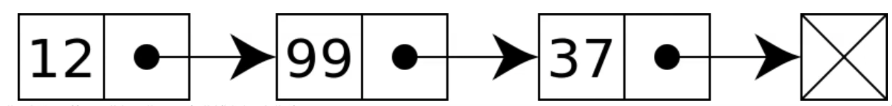

<!DOCTYPE html><html lang="en"><head><meta charSet="utf-8"/><meta http-equiv="x-ua-compatible" content="ie=edge"/><meta name="viewport" content="width=device-width, initial-scale=1, shrink-to-fit=no"/><meta property="twitter:card" content="summary_large_image"/><link rel="shortcut icon" type="image/svg" href="https://graphql-engine-cdn.hasura.io/img/hasura_icon_black.svg"/><noscript></noscript><meta name="generator" content="Gatsby 2.30.1"/><link rel="sitemap" type="application/xml" href="/techblog/sitemap.xml"/><title data-react-helmet="true">링크드리스트(LinkedList)</title><link data-react-helmet="true" rel="canonical" href="https://hasura.io/datastructure&amp;algorithm/5.linkedlist"/><meta data-react-helmet="true" name="title" content="링크드리스트(LinkedList)"/><meta data-react-helmet="true" property="og:title" content="링크드리스트(LinkedList)"/><meta data-react-helmet="true" property="twitter:title" content="링크드리스트(LinkedList)"/><link as="script" rel="preload" href="/techblog/webpack-runtime-d4c4fd1bc10a3601687f.js"/><link as="script" rel="preload" href="/techblog/framework-2e650e46695fe483e136.js"/><link as="script" rel="preload" href="/techblog/app-05f5f8bbd02bbb1241ae.js"/><link as="fetch" rel="preload" href="/techblog/page-data/datastructure&amp;algorithm/5.linkedlist/page-data.json" crossorigin="anonymous"/><link as="fetch" rel="preload" href="/techblog/page-data/sq/d/2619113677.json" crossorigin="anonymous"/><link as="fetch" rel="preload" href="/techblog/page-data/sq/d/2619113677.json" crossorigin="anonymous"/><link as="fetch" rel="preload" href="/techblog/page-data/sq/d/3706406642.json" crossorigin="anonymous"/><link as="fetch" rel="preload" href="/techblog/page-data/sq/d/3706406642.json" crossorigin="anonymous"/><link as="fetch" rel="preload" href="/techblog/page-data/sq/d/417421954.json" crossorigin="anonymous"/><link as="fetch" rel="preload" href="/techblog/page-data/sq/d/417421954.json" crossorigin="anonymous"/><link as="fetch" rel="preload" href="/techblog/page-data/app-data.json" crossorigin="anonymous"/></head><body><div id="___gatsby"><div style="outline:none" tabindex="-1" id="gatsby-focus-wrapper"><div><style data-emotion-css="10k911t">@import url('https://fonts.googleapis.com/css?family=Roboto:300,400,500,700&display=swap');@import url('https://fonts.googleapis.com/css?family=Poppins:300,400,500,600&display=swap');*{margin:0;padding:0;box-sizing:border-box;font-display:swap;}::-webkit-input-placeholder{color:#c2c2c2;}:-ms-input-placeholder{color:#c2c2c2;}::-webkit-input-placeholder{color:#c2c2c2;}::-moz-placeholder{color:#c2c2c2;}:-ms-input-placeholder{color:#c2c2c2;}::placeholder{color:#c2c2c2;}html,body{font-family:-apple-system,BlinkMacSystemFont,'Segoe UI','Roboto','Roboto Light','Oxygen','Ubuntu','Cantarell','Fira Sans','Droid Sans','Helvetica Neue',sans-serif,'Apple Color Emoji','Segoe UI Emoji','Segoe UI Symbol';font-size:16px;-webkit-scroll-behavior:smooth;-moz-scroll-behavior:smooth;-ms-scroll-behavior:smooth;scroll-behavior:smooth;}a{-webkit-transition:color 0.15s;transition:color 0.15s;}body{font-family:'Roboto';}.visibleMobile{display:none;}.visibleMobileView{display:none !important;}.video-responsive{position:relative;padding-bottom:56.2%;}a{-webkit-text-decoration:none;text-decoration:none;}a:hover{-webkit-text-decoration:none;text-decoration:none;}.displayInline{display:inline-block;}.navBarToggle{border:0px solid #fff;border-radius:4px;width:36px;height:33px;position:absolute;right:20px;padding:8px 5px;display:none;}.navBarToggle .iconBar{display:block;width:22px;height:2px;border-radius:1px;margin:0 auto;margin-top:4px;background-color:#001934;}.navBarToggle .iconBar:first-child{margin-top:0px;}.video-responsive iframe{position:absolute;width:100%;height:100%;}.diffNewLine{color:#22863a;background-color:#f0fff4;}.diffRemoveLine{color:red;background-color:#ffcccc;}.navBarParent{width:100%;float:left;display:-webkit-box;display:-webkit-flex;display:-ms-flexbox;display:flex;-webkit-align-items:center;-webkit-box-align:center;-ms-flex-align:center;align-items:center;}.divider{height:30px;margin:0 15px;border-right:1px solid rgba(255,255,255,0.3);}.githubIcon{width:15px;margin-right:5px;}.githubSection{display:-webkit-box;display:-webkit-flex;display:-ms-flexbox;display:flex;-webkit-align-items:center;-webkit-box-align:center;-ms-flex-align:center;align-items:center;color:#000;opacity:0.7;}.githubSection:hover{-webkit-text-decoration:none;text-decoration:none;opacity:1;}.navbar-default .navbar-toggle .icon-bar{background-color:#fff !important;}.navbar-default .navbar-toggle:focus,.navbar-default .navbar-toggle:hover{background-color:#001933;}.headerWrapper{border-bottom:1px solid rgb(212,218,223);box-shadow:rgba(116,129,141,0.1) 0px 1px 1px 0px;display:-webkit-box;display:-webkit-flex;display:-ms-flexbox;display:flex;-webkit-align-items:center;-webkit-box-align:center;-ms-flex-align:center;align-items:center;}.formElement{background-color:transparent;padding:4px;border-radius:5px;position:relative;}.formElement:focus{outline:none;border:none;}.formElement svg path{fill:#2fd2c5;}.searchInput{width:100%;background-color:rgba(28,211,198,.12) !important;border-width:0 !important;color:#C2C2C2;padding:10px;border-radius:5px;color:#fff;opacity:.6;padding-left:38px;max-width:600px;}.searchInput:focus,.searchInput:visited,.searchInput:hover,.searchInput:focus-within{outline:none;border:0;}.searchWrapper{padding-left:0px;padding-right:20px;-webkit-flex:1;-ms-flex:1;flex:1;position:relative;}.searchWrapper a{font-weight:500;}.hitWrapper{background-color:#fff;padding:0.7em 1em 0.4em;border-radius:4px;position:absolute;width:80vw;max-width:30em;top:40px;border:1px solid #ccc;box-shadow:0 1px 4px 0 rgba(0,0,0,0.16);height:auto;max-height:80vh;overflow:scroll;left:0;}.hitWrapper ul li{margin-top:0.7em;padding-top:0.7em;border-top:1px solid;list-style-type:none;}.hitWrapper ul li:first-child{border-top:0px;margin-top:0px;color:black !important;padding:0px;}.showResults{display:block;}.hideResults{display:none;}.hitWrapper span{color:black;font-size:14px;}.headerTitle{height:auto;font-size:16px;line-height:1.5;font-weight:300;color:#fff !important;margin-top:16px;text-transform:uppercase;}.headerTitle a{color:#fff;}.headerTitle a:hover{-webkit-text-decoration:none;text-decoration:none;opacity:0.8;}.logoWrapper{padding:21px 0;padding-left:20px;}.logoContent{font-family:'Roboto';margin-left:16px;font-size:28px;line-height:1.5;font-weight:500;padding-right:10px;}.removePadd{padding:0 !important;}.navBarDefault{background-color:#001934;border-radius:0;border-top:0;margin-bottom:0;border:0;display:-webkit-box;display:-webkit-flex;display:-ms-flexbox;display:flex;-webkit-align-items:center;-webkit-box-align:center;-ms-flex-align:center;align-items:center;box-shadow:-1px 0px 4px 1px rgba(175,158,232,0.4);-webkit-box-shadow:-1px 0px 4px 1px rgba(175,158,232,0.4);-moz-box-shadow:-1px 0px 4px 1px rgba(175,158,232,0.8);-o-box-shadow:-1px 0px 4px 1px rgba(175,158,232,0.4);z-index:1;padding:15px;position:relative;height:80px;}.navBarHeader{min-width:335px;padding-right:20px;display:-webkit-box;display:-webkit-flex;display:-ms-flexbox;display:flex;-webkit-align-items:center;-webkit-box-align:center;-ms-flex-align:center;align-items:center;}.navBarBrand{padding:0px 0px;display:-webkit-box;display:-webkit-flex;display:-ms-flexbox;display:flex;-webkit-align-items:center;-webkit-box-align:center;-ms-flex-align:center;align-items:center;}.navBarBrand img{width:120px;margin-right:6px;display:inline-block;}.navBarUL li{list-style-type:none;}.navBarUL{-webkit-overflow-scrolling:touch;}.navBarUL li a{font-family:'Roboto';color:#fff !important;font-size:16px;font-weight:500;line-height:1em;opacity:1;padding:10px 15px;}.navBarNav{display:-webkit-box;display:-webkit-flex;display:-ms-flexbox;display:flex;-webkit-align-items:center;-webkit-box-align:center;-ms-flex-align:center;align-items:center;}.navBarUL li a img,.navBarUL li a .shareIcon{width:20px;}.navBarUL li a:hover{opacity:0.7;}pre{border:0 !important;background-color:rgb(245,247,249);}blockquote{color:rgb(116,129,141);margin:0px 0px 24px;padding:0px 0px 0px 12px;border-left:4px solid rgb(230,236,241);border-color:rgb(230,236,241);}.socialWrapper{display:-webkit-box;display:-webkit-flex;display:-ms-flexbox;display:flex;-webkit-align-items:center;-webkit-box-align:center;-ms-flex-align:center;align-items:center;}.socialWrapper li{display:inline-block;}.socialWrapper li a{display:contents;}.discordBtn,.twitterBtn{border-radius:4px;border:solid 1px #d1d2d3;background-color:#f1f5f8;width:20px;height:20px;padding-top:2px;margin-left:8px;display:-webkit-box;display:-webkit-flex;display:-ms-flexbox;display:flex;-webkit-align-items:center;-webkit-box-align:center;-ms-flex-align:center;align-items:center;-webkit-box-pack:center;-webkit-justify-content:center;-ms-flex-pack:center;justify-content:center;opacity:.8;cursor:pointer;}.twitterBtn img{width:12px !important;}.discordBtn img{width:10px !important;}.discordBtn:hover,.twitterBtn:hover{opacity:1;}.discordBtn img{width:10px;}.sidebarTitle{background-color:#f8f8f8;padding:18px 16px;font-family:'Poppins';font-size:18px;font-weight:600;color:#001934;display:-webkit-box;display:-webkit-flex;display:-ms-flexbox;display:flex;-webkit-align-items:center;-webkit-box-align:center;-ms-flex-align:center;align-items:center;}.sideBarShow{display:none;}.sidebarTitle a{color:#001934;}.greenCircle{width:8px;height:8px;background-color:#1cd3c6;border-radius:50%;margin:0 12px;}.headerNav{font-family:'Roboto';padding:0px 24px;color:#001933;font-size:16px;font-weight:500;line-height:1em;}.headerNav a{color:#001933;-webkit-text-decoration:none;text-decoration:none;}.headerNav a:hover{-webkit-text-decoration:none;text-decoration:none;}.logoWrapper img{width:40px;}.sideBarUL{margin-top:32px;}.sideBarUL li{list-style-type:none;width:auto;}.sideBarUL li a{font-size:14px;font-weight:500;line-height:1.5;padding:7px 24px 7px 16px;padding-left:10px;padding-right:25px;border-style:solid none solid solid;border-width:1px 0px 1px 1px;border-color:transparent currentcolor transparent transparent;}.hideFrontLine .collapser{background:transparent;border:none;outline:none;position:absolute;right:20px;z-index:1;cursor:pointer;}.hideFrontLine .active > a{background-color:#1ed3c6;color:#fff !important;}.firstLevel ul li .collapser svg path{fill:#fff !important;}.active .collapser > svg > path{fill:#001933 !important;}.firstLevel ul .item ul .item{border-left:1px solid #e6ecf1;}.sideBarUL .item{list-style:none;padding:0;}.sideBarUL .item > a{color:#1ED3C6;-webkit-text-decoration:none;text-decoration:none;display:-webkit-box;display:-webkit-flex;display:-ms-flexbox;display:flex;-webkit-align-items:center;-webkit-box-align:center;-ms-flex-align:center;align-items:center;position:relative;width:100%;padding-right:35px;padding-left:15px;}.showFrontLine .item > a:hover{background-color:#001933;}.showFrontLine .active > a{background-color:#001933;}.sideBarUL .item .item{margin-left:16px;}.firstLevel > ul > .item{margin-left:0 !important;}.showFrontLine .item .item{border-left:1px solid #e6ecf1;border-left-color:rgb(230,236,241);padding:0;width:calc(100% - 16px) !important;}.showFrontLine .item .active > a{border-color:rgb(230,236,241) !important;border-style:solid none solid solid;border-width:1px 0px 1px 1px;background-color:#1ed3c6 !important;color:#fff;}.titleWrapper{display:-webkit-box;display:-webkit-flex;display:-ms-flexbox;display:flex;-webkit-align-items:center;-webkit-box-align:center;-ms-flex-align:center;align-items:center;padding-bottom:40px;border-bottom:1px solid rgb(230,236,241);margin-bottom:32px;}.gitBtn{height:30px;min-height:30px;display:-webkit-box;display:-webkit-flex;display:-ms-flexbox;display:flex;-webkit-align-items:center;-webkit-box-align:center;-ms-flex-align:center;align-items:center;}.gitBtn img{width:15px;display:inline-block;margin-right:5px;}.addPaddTopBottom{padding:50px 0;}.preRightWrapper{display:block;margin:0px;-webkit-flex:1 1 0%;-ms-flex:1 1 0%;flex:1 1 0%;padding:16px;text-align:right;}.smallContent{display:block;margin:0px;padding:0px;color:#6e6e6e;}.smallContent span{font-size:12px;line-height:1.625;font-weight:400;}.nextRightWrapper{display:block;margin:0px;padding:16px;-webkit-flex:1 1 0%;-ms-flex:1 1 0%;flex:1 1 0%;}table{padding:0;}table tr{border-top:1px solid #cccccc;margin:0;padding:0;}table tr:nth-child(2n){background-color:#f8f8f8;}table tr th{font-weight:bold;border:1px solid #cccccc;text-align:left;margin:0;padding:6px 13px;}table tr td{border:1px solid #cccccc;text-align:left;margin:0;padding:6px 13px;}table tr th:first-child,table tr td:first-child{margin-top:0;}table tr th:last-child,table tr td:last-child{margin-bottom:0;}img{max-width:100%;}.githubBtn{display:-webkit-box;display:-webkit-flex;display:-ms-flexbox;display:flex;-webkit-align-items:center;-webkit-box-align:center;-ms-flex-align:center;align-items:center;font-size:16px;padding:10px 0px;padding-left:15px;max-height:40px;}.githubBtn span span{display:-webkit-box;display:-webkit-flex;display:-ms-flexbox;display:flex;-webkit-align-items:center;-webkit-box-align:center;-ms-flex-align:center;align-items:center;}.communitySection{font-size:24px;font-weight:700;}.authorSection{padding:20px 0;}.authorSection,.authorName{display:-webkit-box;display:-webkit-flex;display:-ms-flexbox;display:flex;-webkit-align-items:center;-webkit-box-align:center;-ms-flex-align:center;align-items:center;}.authorImg img{width:75px;height:75px;border-radius:50%;min-width:75px;max-width:75px;min-height:75px;max-height:75px;}.authorDetails{padding-left:10px;}.authorDesc{padding-top:5px;font-size:14px;}.authorName img{margin-left:10px;display:inline-block;width:20px;}.authorName img:hover{opacity:0.7;}.heading1{font-size:26px;font-weight:800;line-height:1.5;margin-bottom:16px;margin-top:32px;}.heading2{font-size:24px;font-weight:700;line-height:1.5;margin-bottom:16px;margin-top:32px;}.heading3{font-size:20px;font-weight:600;line-height:1.5;margin-bottom:16px;margin-top:32px;}.heading4{font-size:18px;font-weight:500;line-height:1.5;margin-bottom:16px;margin-top:32px;}.heading5{font-size:16px;font-weight:400;line-height:1.5;margin-bottom:16px;margin-top:32px;}.heading6{font-size:14px;font-weight:300;line-height:1.5;margin-bottom:16px;margin-top:32px;}.paragraph{margin:16px 0px 32px;line-height:1.625;}.pre{font-size:14px;margin:0px;padding:16px;overflow:auto;}.poweredBy{font-size:0.6em;text-align:end;padding:0;}.topnav{-webkit-transition:top 0.5s,bottom 0.5s;}@media (max-width:767px){.formElement svg path{fill:#001934;}.visibleMobileView{display:block !important;}.searchInput{color:#001934;}.socialWrapper{position:absolute;right:10px;top:29px;}.responsive{margin-top:15px;position:relative;padding-bottom:20px;border-top:1px solid #fff;}.headerTitle{padding-right:50px;font-size:16px;}.navBarBrand{min-height:40px;}.navBarBrand img{margin-right:8px;}.topnav.responsive .visibleMobile{display:block;}.topnav .navBarUL{display:none;}.topnav.responsive .navBarUL{display:block;text-align:left;}.hiddenMobile{display:none !important;}hr{margin-top:0;margin-bottom:0;}.navBarParent{display:block;}.separator{margin-top:20px;margin-bottom:20px;}.navBarULRight{position:static;}.navBarUL{display:-webkit-box;display:-webkit-flex;display:-ms-flexbox;display:flex;-webkit-align-items:center;-webkit-box-align:center;-ms-flex-align:center;align-items:center;margin:7.5px 0px;}.navBarUL li{height:37px;}.navBarUL li a{font-size:14px;padding:10px 15px;}.navBarDefault{display:block;height:auto;}.navBarToggle{margin-right:0;display:block;position:absolute;left:11px;top:15px;background:#fff;}.navBarHeader{display:-webkit-box;display:-webkit-flex;display:-ms-flexbox;display:flex;min-width:auto;padding-right:0;-webkit-align-items:center;-webkit-box-align:center;-ms-flex-align:center;align-items:center;}.navBarBrand{font-size:20px;padding:0 0;padding-left:0;-webkit-flex:initial;-ms-flex:initial;flex:initial;padding-right:15px;}.titleWrapper{padding:0 15px;display:block;}.gitBtn{display:inline-block;}.mobileView{text-align:left !important;padding-left:0 !important;}.searchWrapper{padding:0px 0;padding-top:0px;position:absolute;bottom:0px;width:calc(100% - 70px);position:absolute;left:40px;top:8px;}.hitWrapper{width:100%;right:0;top:35px;max-height:-webkit-fit-content;max-height:-moz-fit-content;max-height:fit-content;position:static;}}@media (min-width:768px) and (max-width:991px){.navBarDefault{padding:10px;}.navBarBrand{font-size:22px;}.navBarHeader{min-width:240px;-webkit-flex:initial;-ms-flex:initial;flex:initial;}.githubBtn{padding:10px 10px;}.divider{margin:0 5px;height:20px;}.hitWrapper{max-width:500px;}.navBarUL li a{padding:10px 5px;}.searchWrapper{padding-left:0px;}}</style><div class="navBarWrapper"><nav class="navBarDefault"><div class="navBarHeader"><a class="navBarBrand" href="/techblog/datastructure&amp;algorithm/5.linkedlist/wisemk79.github.io/techblog">Suhyeon&#x27;s TechBlog</a><div class="headerTitle displayInline"><a href='https://hasura.io/learn/'></a></div></div><ul class="socialWrapper visibleMobileView"><li>
		    <a href="https://twitter.com/hasurahq" target="_blank" rel="noopener">
		      <div class="twitterBtn">
		        
		      </div>
		    </a>
		  </li>
			<li>
		    <a href="https://discordapp.com/invite/hasura" target="_blank" rel="noopener">
		      <div class="discordBtn">
		        
		      </div>
		    </a>
		  </li></ul><div id="navbar" class="topnav"><div class="visibleMobile"><style data-emotion-css="8uxxw2">.css-8uxxw2{width:100%;height:100vh;overflow:auto;position:fixed;padding-left:0px;position:-webkit-sticky;position:-moz-sticky;position:-webkit-sticky;position:sticky;top:0;padding-right:0;-webkit-box-shadow:-1px 0px 4px 1px rgba(175,158,232,0.4);}@media only screen and (max-width:1023px){.css-8uxxw2{width:100%;height:100vh;}}@media (min-width:767px) and (max-width:1023px){.css-8uxxw2{padding-left:0;}}@media only screen and (max-width:767px){.css-8uxxw2{padding-left:0px;height:auto;}}</style><aside class="css-8uxxw2 e1sbq3r11"><ul class="sideBarUL"><li class="hideFrontLine firstLevel item "><ul><li class=" item "><a href="/techblog/tdd">테스트 주도 개발(TDD)<button aria-label="collapse" class="collapser"><svg xmlns="http://www.w3.org/2000/svg" width="12" height="12" viewBox="0 0 24 24"><path d="M0 7.33l2.829-2.83 9.175 9.339 9.167-9.339 2.829 2.83-11.996 12.17z"></path></svg></button></a><ul><li class=" item "><a href="/techblog/tdd/1.unit-test">유닛 테스트(Unit Test)</a></li><li class=" item "><a href="/techblog/tdd/2.mocha">Mocha Framework</a></li><li class=" item "><a href="/techblog/tdd/3.chai">Chai Library</a></li></ul></li><li class=" item "><a href="/techblog/terminology">용어정리(terminology)<button aria-label="collapse" class="collapser"><svg xmlns="http://www.w3.org/2000/svg" width="12" height="12" viewBox="0 0 24 24"><path d="M0 7.33l2.829-2.83 9.175 9.339 9.167-9.339 2.829 2.83-11.996 12.17z"></path></svg></button></a><ul><li class=" item "><a href="/techblog/terminology/web">Web</a></li></ul></li><li class=" item "><a href="/techblog/framework">프레임워크(Framework)<button aria-label="collapse" class="collapser"><svg xmlns="http://www.w3.org/2000/svg" width="12" height="12" viewBox="0 0 24 24"><path d="M0 7.33l2.829-2.83 9.175 9.339 9.167-9.339 2.829 2.83-11.996 12.17z"></path></svg></button></a><ul><li class=" item "><a href="/techblog/framework/NextJs">Next Js</a></li><li class=" item "><a href="/techblog/framework/electron">일렉트론 학습<button aria-label="collapse" class="collapser"><svg xmlns="http://www.w3.org/2000/svg" width="12" height="12" viewBox="0 0 24 24"><path d="M0 7.33l2.829-2.83 9.175 9.339 9.167-9.339 2.829 2.83-11.996 12.17z"></path></svg></button></a><ul><li class=" item "><a href="/techblog/framework/electron/electronbasic">Electron Basic</a></li></ul></li><li class=" item "><a href="/techblog/framework/prisma">Prisma<button aria-label="collapse" class="collapser"><svg xmlns="http://www.w3.org/2000/svg" width="12" height="12" viewBox="0 0 24 24"><path d="M0 7.33l2.829-2.83 9.175 9.339 9.167-9.339 2.829 2.83-11.996 12.17z"></path></svg></button></a><ul><li class=" item "><a href="/techblog/framework/prisma/NoticePrisma">Notice Prisma</a></li><li class=" item "><a href="/techblog/framework/prisma/prisma2">Prisma 2</a></li></ul></li></ul></li><li class=" item "><a href="/techblog/datastructure&amp;algorithm">자료구조 &amp; 알고리즘(Datastructure &amp; Algorithm)<button aria-label="collapse" class="collapser"><svg xmlns="http://www.w3.org/2000/svg" width="12" height="12" viewBox="0 0 24 24"><path d="M0 7.33l2.829-2.83 9.175 9.339 9.167-9.339 2.829 2.83-11.996 12.17z"></path></svg></button></a><ul><li class=" item "><a href="/techblog/datastructure&amp;algorithm/10.SpaceComplexity">공간 복잡도(Space Complexity)</a></li><li class=" item "><a href="/techblog/datastructure&amp;algorithm/11.BubbleSort">버블 정렬(Bubble Sort)</a></li><li class=" item "><a href="/techblog/datastructure&amp;algorithm/12.InsertionSort">삽입 정렬(Insertion Sort)</a></li><li class=" item "><a href="/techblog/datastructure&amp;algorithm/13.SelectionSort">선택 정렬(Selection Sort)</a></li><li class=" item "><a href="/techblog/datastructure&amp;algorithm/14.RecursiveCall">재귀 용법(Recursive Call)</a></li><li class=" item "><a href="/techblog/datastructure&amp;algorithm/15.DynamicProgramming">동적 계획법과 분할 정복(Dynamic Programming &amp; Divide and conquer</a></li><li class=" item "><a href="/techblog/datastructure&amp;algorithm/16.QuickSort">퀵 정렬(Quick Sort)</a></li><li class=" item "><a href="/techblog/datastructure&amp;algorithm/17.MergeSort">병렬 정렬(Merge Sort)</a></li><li class=" item "><a href="/techblog/datastructure&amp;algorithm/18.SequentialSearch">순차 탐색(Sequential Search)</a></li><li class=" item "><a href="/techblog/datastructure&amp;algorithm/19.BinarySearch">탐색 알고리즘(Binary Search)</a></li><li class=" item "><a href="/techblog/datastructure&amp;algorithm/2.array">배열(Array)</a></li><li class=" item "><a href="/techblog/datastructure&amp;algorithm/20.Graph">그래프(Graph)</a></li><li class=" item "><a href="/techblog/datastructure&amp;algorithm/21.Depth-FirstSearch">깊이 우선 탐색(Depth-FirstSearch)</a></li><li class=" item "><a href="/techblog/datastructure&amp;algorithm/22.Breadth-FirstSearch">너비 우선 탐색(Breadth-FirstSearch)</a></li><li class=" item "><a href="/techblog/datastructure&amp;algorithm/23.GreedyAlgorithm">탐욕 알고리즘(Greedy Algorithm)</a></li><li class=" item "><a href="/techblog/datastructure&amp;algorithm/24.DijkstraAlgorithm">다익스트라 알고리즘(Dijkstra Algorithm)</a></li><li class=" item "><a href="/techblog/datastructure&amp;algorithm/25.MinimumSpanningTree">최소 신장 트리(Minimum Spanning Tree)</a></li><li class=" item "><a href="/techblog/datastructure&amp;algorithm/26.BackTracking">백트래킹(BackTracking)</a></li><li class=" item "><a href="/techblog/datastructure&amp;algorithm/3.queue">큐(Queue)</a></li><li class=" item "><a href="/techblog/datastructure&amp;algorithm/4.stack">스택(Stack)</a></li><li class=" item "><a aria-current="page" class="" href="/techblog/datastructure&amp;algorithm/5.linkedlist">링크드리스트(LinkedList)</a></li><li class=" item "><a href="/techblog/datastructure&amp;algorithm/6.TimeComplexity">시간 복잡도(Time Complexity)</a></li><li class=" item "><a href="/techblog/datastructure&amp;algorithm/7.HashTable">해쉬 테이블(HashTable)</a></li><li class=" item "><a href="/techblog/datastructure&amp;algorithm/8.Tree">트리(Tree)</a></li><li class=" item "><a href="/techblog/datastructure&amp;algorithm/9.Heap">힙(Heap)</a></li></ul></li><li class=" item "><a href="/techblog/git">깃(Git)<button aria-label="collapse" class="collapser"><svg xmlns="http://www.w3.org/2000/svg" width="12" height="12" viewBox="0 0 24 24"><path d="M0 7.33l2.829-2.83 9.175 9.339 9.167-9.339 2.829 2.83-11.996 12.17z"></path></svg></button></a><ul><li class=" item "><a href="/techblog/git/basic-git-command">Basic git command</a></li><li class=" item "><a href="/techblog/git/changing-default-branch">Changing the Default Branch</a></li><li class=" item "><a href="/techblog/git/configuring-protected-branches">Configure Branch Protection Rule</a></li><li class=" item "><a href="/techblog/git/gitforksync">git fork &amp; sync</a></li><li class=" item "><a href="/techblog/git/rebase">Rebase</a></li></ul></li><li class=" item "><a href="/techblog/infra">인프라(Infra)<button aria-label="collapse" class="collapser"><svg xmlns="http://www.w3.org/2000/svg" width="12" height="12" viewBox="0 0 24 24"><path d="M0 7.33l2.829-2.83 9.175 9.339 9.167-9.339 2.829 2.83-11.996 12.17z"></path></svg></button></a><ul><li class=" item "><a href="/techblog/infra/1.BasicTheory">Basic Theory</a></li><li class=" item "><a href="/techblog/infra/2.aws">aws<button aria-label="collapse" class="collapser"><svg xmlns="http://www.w3.org/2000/svg" width="12" height="12" viewBox="0 0 24 24"><path d="M0 7.33l2.829-2.83 9.175 9.339 9.167-9.339 2.829 2.83-11.996 12.17z"></path></svg></button></a><ul><li class=" item "><a href="/techblog/infra/2.aws/AWS-Basic">AWS-Basic</a></li><li class=" item "><a href="/techblog/infra/2.aws/AWS-EC2">AWS-EC2</a></li><li class=" item "><a href="/techblog/infra/2.aws/AWS-RDS">AWS-RDS</a></li><li class=" item "><a href="/techblog/infra/2.aws/AWS-Route53">AWS-Route 53</a></li><li class=" item "><a href="/techblog/infra/2.aws/AWS-S3">AWS-S3</a></li></ul></li><li class=" item "><a href="/techblog/infra/3.docker">Docker<button aria-label="collapse" class="collapser"><svg xmlns="http://www.w3.org/2000/svg" width="12" height="12" viewBox="0 0 24 24"><path d="M0 7.33l2.829-2.83 9.175 9.339 9.167-9.339 2.829 2.83-11.996 12.17z"></path></svg></button></a><ul><li class=" item "><a href="/techblog/infra/3.docker/docker">Docker</a></li><li class=" item "><a href="/techblog/infra/3.docker/dockerawsdeploy">Docker AWS EC2 Deploy</a></li><li class=" item "><a href="/techblog/infra/3.docker/dockerbasic">Docker Basic</a></li></ul></li></ul></li><li class=" item "><a href="/techblog/language">언어(Language)<button aria-label="collapse" class="collapser"><svg xmlns="http://www.w3.org/2000/svg" width="12" height="12" viewBox="0 0 24 24"><path d="M0 7.33l2.829-2.83 9.175 9.339 9.167-9.339 2.829 2.83-11.996 12.17z"></path></svg></button></a><ul><li class=" item "><a href="/techblog/language/javascript">Javascript<button aria-label="collapse" class="collapser"><svg xmlns="http://www.w3.org/2000/svg" width="12" height="12" viewBox="0 0 24 24"><path d="M0 7.33l2.829-2.83 9.175 9.339 9.167-9.339 2.829 2.83-11.996 12.17z"></path></svg></button></a><ul><li class=" item "><a href="/techblog/language/javascript/class">Class</a></li><li class=" item "><a href="/techblog/language/javascript/closure">Closure</a></li><li class=" item "><a href="/techblog/language/javascript/executionContext">Execution Context(실행 컨텍스트)</a></li><li class=" item "><a href="/techblog/language/javascript/scope_this">스코프 &amp; 함수 호출 방식에 의해 결정되는 this</a></li></ul></li><li class=" item "><a href="/techblog/language/python">Python<button aria-label="collapse" class="collapser"><svg xmlns="http://www.w3.org/2000/svg" width="12" height="12" viewBox="0 0 24 24"><path d="M0 7.33l2.829-2.83 9.175 9.339 9.167-9.339 2.829 2.83-11.996 12.17z"></path></svg></button></a><ul><li class=" item "><a href="/techblog/language/python/basic">Basic</a></li></ul></li><li class=" item "><a href="/techblog/language/typescript">Typescript</a></li></ul></li><li class=" item "><a href="/techblog/library">라이브러리(Library)<button aria-label="collapse" class="collapser"><svg xmlns="http://www.w3.org/2000/svg" width="12" height="12" viewBox="0 0 24 24"><path d="M0 7.33l2.829-2.83 9.175 9.339 9.167-9.339 2.829 2.83-11.996 12.17z"></path></svg></button></a><ul><li class=" item "><a href="/techblog/library/graphql">GraphQL<button aria-label="collapse" class="collapser"><svg xmlns="http://www.w3.org/2000/svg" width="12" height="12" viewBox="0 0 24 24"><path d="M0 7.33l2.829-2.83 9.175 9.339 9.167-9.339 2.829 2.83-11.996 12.17z"></path></svg></button></a><ul><li class=" item "><a href="/techblog/library/graphql/ApolloGraphQLserver">ApolloGraphQLserver</a></li><li class=" item "><a href="/techblog/library/graphql/graphql">GraphQL</a></li></ul></li><li class=" item "><a href="/techblog/library/nexusjs">Nexus.JS</a></li></ul></li></ul></li><style data-emotion-css="1q387v1">.css-1q387v1{list-style:none;padding:0.5rem 0;}.css-1q387v1 hr{margin:0;padding:0;border:0;border-bottom:1px solid #ede7f3;}</style><li class="css-1q387v1 e1sbq3r12"><hr/></li><style data-emotion-css="12lts21">.css-12lts21{list-style:none;}.css-12lts21 a{color:#5c6975;-webkit-text-decoration:none;text-decoration:none;font-weight:400;padding:0.45rem 0 0.45rem 2rem;display:block;position:relative;}.css-12lts21 a:hover{color:#1ed3c6 !important;}.css-12lts21 a svg{float:right;margin-right:1rem;}</style><li class="css-12lts21 e1sbq3r10"><a href="https://hasura.io" to="https://hasura.io" target="_blank" rel="noopener noreferrer">Hasura<svg xmlns="http://www.w3.org/2000/svg" width="14" height="14" viewBox="0 0 24 24" fill="none" stroke="currentColor" stroke-width="2" stroke-linecap="round" stroke-linejoin="round"><path d="M18 13v6a2 2 0 0 1-2 2H5a2 2 0 0 1-2-2V8a2 2 0 0 1 2-2h6"></path><polyline points="15 3 21 3 21 9"></polyline><line x1="10" y1="14" x2="21" y2="3"></line></svg></a></li></ul></aside><hr/></div><ul class="navBarUL navBarNav navBarULRight"><li class="divider hiddenMobile"></li><li class="hiddenMobile"><ul class="socialWrapper"><li>
		    <a href="https://twitter.com/hasurahq" target="_blank" rel="noopener">
		      <div class="twitterBtn">
		        
		      </div>
		    </a>
		  </li>
			<li>
		    <a href="https://discordapp.com/invite/hasura" target="_blank" rel="noopener">
		      <div class="discordBtn">
		        
		      </div>
		    </a>
		  </li></ul></li><li class="githubBtn"><span><a href="https://github.com/hasura/gatsby-gitbook-boilerplate" data-show-count="true" aria-label="Star on GitHub">Star</a></span></li><li><style data-emotion-css="utzlxm">.css-utzlxm{display:-webkit-box;display:-webkit-flex;display:-ms-flexbox;display:flex;-webkit-box-pack:end;-webkit-justify-content:flex-end;-ms-flex-pack:end;justify-content:flex-end;width:100%;padding:0 20px 0 25px;}.css-utzlxm .switch{position:relative;display:inline-block;width:50px;height:20px;}.css-utzlxm .switch input{opacity:0;width:0;height:0;}.css-utzlxm .slider{position:absolute;cursor:pointer;top:0;left:0;right:0;bottom:0;background-color:#ccc;-webkit-transition:0.4s;-webkit-transition:0.4s;transition:0.4s;}.css-utzlxm .slider:before{position:absolute;content:'';height:30px;width:30px;left:0px;bottom:4px;top:0;bottom:0;margin:auto 0;-webkit-transition:0.4s;-webkit-transition:0.4s;transition:0.4s;box-shadow:0 0px 15px #2020203d;background:white url();background-repeat:no-repeat;background-position:center;}.css-utzlxm input:checked + .slider{background:linear-gradient(to right,#fefb72,#f0bb31);}.css-utzlxm input:checked + .slider:before{-webkit-transform:translateX(24px);-ms-transform:translateX(24px);-webkit-transform:translateX(24px);-ms-transform:translateX(24px);transform:translateX(24px);background:white url();background-repeat:no-repeat;background-position:center;}.css-utzlxm .slider.round{border-radius:34px;}.css-utzlxm .slider.round:before{border-radius:50%;}</style><div class="css-utzlxm e1c69wq20"><label id="switch" class="switch"><input type="checkbox" id="slider" checked=""/><span class="slider round"></span></label></div></li></ul></div></nav><style data-emotion-css="1gvjyvp">.css-1gvjyvp{height:60px;box-shadow:0 3px 6px 0 rgba(0,0,0,0.16);background-color:#f8f8f8;position:relative;display:none;}@media (max-width:767px){.css-1gvjyvp{display:block;}}</style><div class="css-1gvjyvp e1217p0e0"><div class="navBarDefault removePadd"><span class="navBarToggle" role="button" tabindex="0"><span class="iconBar"></span><span class="iconBar"></span><span class="iconBar"></span></span></div></div></div><style data-emotion-css="139q0o8">.css-139q0o8{display:-webkit-box;display:-webkit-flex;display:-ms-flexbox;display:flex;-webkit-box-pack:justify;-webkit-justify-content:space-between;-ms-flex-pack:justify;justify-content:space-between;background:#fff;}.css-139q0o8 .sideBarUL li a{color:#3B454E;}.css-139q0o8 .sideBarUL .item > a:hover{background-color:#1ed3c6;color:#fff !important;}@media only screen and (max-width:767px){.css-139q0o8{display:block;}}</style><div class="css-139q0o8 e1eqkayb0"><style data-emotion-css="192n44p">.css-192n44p{width:298px;}</style><div class="hiddenMobile css-192n44p e1eqkayb3"><style data-emotion-css="8uxxw2">.css-8uxxw2{width:100%;height:100vh;overflow:auto;position:fixed;padding-left:0px;position:-webkit-sticky;position:-moz-sticky;position:-webkit-sticky;position:sticky;top:0;padding-right:0;-webkit-box-shadow:-1px 0px 4px 1px rgba(175,158,232,0.4);}@media only screen and (max-width:1023px){.css-8uxxw2{width:100%;height:100vh;}}@media (min-width:767px) and (max-width:1023px){.css-8uxxw2{padding-left:0;}}@media only screen and (max-width:767px){.css-8uxxw2{padding-left:0px;height:auto;}}</style><aside class="css-8uxxw2 e1sbq3r11"><ul class="sideBarUL"><li class="hideFrontLine firstLevel item "><ul><li class=" item "><a href="/techblog/tdd">테스트 주도 개발(TDD)<button aria-label="collapse" class="collapser"><svg xmlns="http://www.w3.org/2000/svg" width="12" height="12" viewBox="0 0 24 24"><path d="M0 7.33l2.829-2.83 9.175 9.339 9.167-9.339 2.829 2.83-11.996 12.17z"></path></svg></button></a><ul><li class=" item "><a href="/techblog/tdd/1.unit-test">유닛 테스트(Unit Test)</a></li><li class=" item "><a href="/techblog/tdd/2.mocha">Mocha Framework</a></li><li class=" item "><a href="/techblog/tdd/3.chai">Chai Library</a></li></ul></li><li class=" item "><a href="/techblog/terminology">용어정리(terminology)<button aria-label="collapse" class="collapser"><svg xmlns="http://www.w3.org/2000/svg" width="12" height="12" viewBox="0 0 24 24"><path d="M0 7.33l2.829-2.83 9.175 9.339 9.167-9.339 2.829 2.83-11.996 12.17z"></path></svg></button></a><ul><li class=" item "><a href="/techblog/terminology/web">Web</a></li></ul></li><li class=" item "><a href="/techblog/framework">프레임워크(Framework)<button aria-label="collapse" class="collapser"><svg xmlns="http://www.w3.org/2000/svg" width="12" height="12" viewBox="0 0 24 24"><path d="M0 7.33l2.829-2.83 9.175 9.339 9.167-9.339 2.829 2.83-11.996 12.17z"></path></svg></button></a><ul><li class=" item "><a href="/techblog/framework/NextJs">Next Js</a></li><li class=" item "><a href="/techblog/framework/electron">일렉트론 학습<button aria-label="collapse" class="collapser"><svg xmlns="http://www.w3.org/2000/svg" width="12" height="12" viewBox="0 0 24 24"><path d="M0 7.33l2.829-2.83 9.175 9.339 9.167-9.339 2.829 2.83-11.996 12.17z"></path></svg></button></a><ul><li class=" item "><a href="/techblog/framework/electron/electronbasic">Electron Basic</a></li></ul></li><li class=" item "><a href="/techblog/framework/prisma">Prisma<button aria-label="collapse" class="collapser"><svg xmlns="http://www.w3.org/2000/svg" width="12" height="12" viewBox="0 0 24 24"><path d="M0 7.33l2.829-2.83 9.175 9.339 9.167-9.339 2.829 2.83-11.996 12.17z"></path></svg></button></a><ul><li class=" item "><a href="/techblog/framework/prisma/NoticePrisma">Notice Prisma</a></li><li class=" item "><a href="/techblog/framework/prisma/prisma2">Prisma 2</a></li></ul></li></ul></li><li class=" item "><a href="/techblog/datastructure&amp;algorithm">자료구조 &amp; 알고리즘(Datastructure &amp; Algorithm)<button aria-label="collapse" class="collapser"><svg xmlns="http://www.w3.org/2000/svg" width="12" height="12" viewBox="0 0 24 24"><path d="M0 7.33l2.829-2.83 9.175 9.339 9.167-9.339 2.829 2.83-11.996 12.17z"></path></svg></button></a><ul><li class=" item "><a href="/techblog/datastructure&amp;algorithm/10.SpaceComplexity">공간 복잡도(Space Complexity)</a></li><li class=" item "><a href="/techblog/datastructure&amp;algorithm/11.BubbleSort">버블 정렬(Bubble Sort)</a></li><li class=" item "><a href="/techblog/datastructure&amp;algorithm/12.InsertionSort">삽입 정렬(Insertion Sort)</a></li><li class=" item "><a href="/techblog/datastructure&amp;algorithm/13.SelectionSort">선택 정렬(Selection Sort)</a></li><li class=" item "><a href="/techblog/datastructure&amp;algorithm/14.RecursiveCall">재귀 용법(Recursive Call)</a></li><li class=" item "><a href="/techblog/datastructure&amp;algorithm/15.DynamicProgramming">동적 계획법과 분할 정복(Dynamic Programming &amp; Divide and conquer</a></li><li class=" item "><a href="/techblog/datastructure&amp;algorithm/16.QuickSort">퀵 정렬(Quick Sort)</a></li><li class=" item "><a href="/techblog/datastructure&amp;algorithm/17.MergeSort">병렬 정렬(Merge Sort)</a></li><li class=" item "><a href="/techblog/datastructure&amp;algorithm/18.SequentialSearch">순차 탐색(Sequential Search)</a></li><li class=" item "><a href="/techblog/datastructure&amp;algorithm/19.BinarySearch">탐색 알고리즘(Binary Search)</a></li><li class=" item "><a href="/techblog/datastructure&amp;algorithm/2.array">배열(Array)</a></li><li class=" item "><a href="/techblog/datastructure&amp;algorithm/20.Graph">그래프(Graph)</a></li><li class=" item "><a href="/techblog/datastructure&amp;algorithm/21.Depth-FirstSearch">깊이 우선 탐색(Depth-FirstSearch)</a></li><li class=" item "><a href="/techblog/datastructure&amp;algorithm/22.Breadth-FirstSearch">너비 우선 탐색(Breadth-FirstSearch)</a></li><li class=" item "><a href="/techblog/datastructure&amp;algorithm/23.GreedyAlgorithm">탐욕 알고리즘(Greedy Algorithm)</a></li><li class=" item "><a href="/techblog/datastructure&amp;algorithm/24.DijkstraAlgorithm">다익스트라 알고리즘(Dijkstra Algorithm)</a></li><li class=" item "><a href="/techblog/datastructure&amp;algorithm/25.MinimumSpanningTree">최소 신장 트리(Minimum Spanning Tree)</a></li><li class=" item "><a href="/techblog/datastructure&amp;algorithm/26.BackTracking">백트래킹(BackTracking)</a></li><li class=" item "><a href="/techblog/datastructure&amp;algorithm/3.queue">큐(Queue)</a></li><li class=" item "><a href="/techblog/datastructure&amp;algorithm/4.stack">스택(Stack)</a></li><li class=" item "><a aria-current="page" class="" href="/techblog/datastructure&amp;algorithm/5.linkedlist">링크드리스트(LinkedList)</a></li><li class=" item "><a href="/techblog/datastructure&amp;algorithm/6.TimeComplexity">시간 복잡도(Time Complexity)</a></li><li class=" item "><a href="/techblog/datastructure&amp;algorithm/7.HashTable">해쉬 테이블(HashTable)</a></li><li class=" item "><a href="/techblog/datastructure&amp;algorithm/8.Tree">트리(Tree)</a></li><li class=" item "><a href="/techblog/datastructure&amp;algorithm/9.Heap">힙(Heap)</a></li></ul></li><li class=" item "><a href="/techblog/git">깃(Git)<button aria-label="collapse" class="collapser"><svg xmlns="http://www.w3.org/2000/svg" width="12" height="12" viewBox="0 0 24 24"><path d="M0 7.33l2.829-2.83 9.175 9.339 9.167-9.339 2.829 2.83-11.996 12.17z"></path></svg></button></a><ul><li class=" item "><a href="/techblog/git/basic-git-command">Basic git command</a></li><li class=" item "><a href="/techblog/git/changing-default-branch">Changing the Default Branch</a></li><li class=" item "><a href="/techblog/git/configuring-protected-branches">Configure Branch Protection Rule</a></li><li class=" item "><a href="/techblog/git/gitforksync">git fork &amp; sync</a></li><li class=" item "><a href="/techblog/git/rebase">Rebase</a></li></ul></li><li class=" item "><a href="/techblog/infra">인프라(Infra)<button aria-label="collapse" class="collapser"><svg xmlns="http://www.w3.org/2000/svg" width="12" height="12" viewBox="0 0 24 24"><path d="M0 7.33l2.829-2.83 9.175 9.339 9.167-9.339 2.829 2.83-11.996 12.17z"></path></svg></button></a><ul><li class=" item "><a href="/techblog/infra/1.BasicTheory">Basic Theory</a></li><li class=" item "><a href="/techblog/infra/2.aws">aws<button aria-label="collapse" class="collapser"><svg xmlns="http://www.w3.org/2000/svg" width="12" height="12" viewBox="0 0 24 24"><path d="M0 7.33l2.829-2.83 9.175 9.339 9.167-9.339 2.829 2.83-11.996 12.17z"></path></svg></button></a><ul><li class=" item "><a href="/techblog/infra/2.aws/AWS-Basic">AWS-Basic</a></li><li class=" item "><a href="/techblog/infra/2.aws/AWS-EC2">AWS-EC2</a></li><li class=" item "><a href="/techblog/infra/2.aws/AWS-RDS">AWS-RDS</a></li><li class=" item "><a href="/techblog/infra/2.aws/AWS-Route53">AWS-Route 53</a></li><li class=" item "><a href="/techblog/infra/2.aws/AWS-S3">AWS-S3</a></li></ul></li><li class=" item "><a href="/techblog/infra/3.docker">Docker<button aria-label="collapse" class="collapser"><svg xmlns="http://www.w3.org/2000/svg" width="12" height="12" viewBox="0 0 24 24"><path d="M0 7.33l2.829-2.83 9.175 9.339 9.167-9.339 2.829 2.83-11.996 12.17z"></path></svg></button></a><ul><li class=" item "><a href="/techblog/infra/3.docker/docker">Docker</a></li><li class=" item "><a href="/techblog/infra/3.docker/dockerawsdeploy">Docker AWS EC2 Deploy</a></li><li class=" item "><a href="/techblog/infra/3.docker/dockerbasic">Docker Basic</a></li></ul></li></ul></li><li class=" item "><a href="/techblog/language">언어(Language)<button aria-label="collapse" class="collapser"><svg xmlns="http://www.w3.org/2000/svg" width="12" height="12" viewBox="0 0 24 24"><path d="M0 7.33l2.829-2.83 9.175 9.339 9.167-9.339 2.829 2.83-11.996 12.17z"></path></svg></button></a><ul><li class=" item "><a href="/techblog/language/javascript">Javascript<button aria-label="collapse" class="collapser"><svg xmlns="http://www.w3.org/2000/svg" width="12" height="12" viewBox="0 0 24 24"><path d="M0 7.33l2.829-2.83 9.175 9.339 9.167-9.339 2.829 2.83-11.996 12.17z"></path></svg></button></a><ul><li class=" item "><a href="/techblog/language/javascript/class">Class</a></li><li class=" item "><a href="/techblog/language/javascript/closure">Closure</a></li><li class=" item "><a href="/techblog/language/javascript/executionContext">Execution Context(실행 컨텍스트)</a></li><li class=" item "><a href="/techblog/language/javascript/scope_this">스코프 &amp; 함수 호출 방식에 의해 결정되는 this</a></li></ul></li><li class=" item "><a href="/techblog/language/python">Python<button aria-label="collapse" class="collapser"><svg xmlns="http://www.w3.org/2000/svg" width="12" height="12" viewBox="0 0 24 24"><path d="M0 7.33l2.829-2.83 9.175 9.339 9.167-9.339 2.829 2.83-11.996 12.17z"></path></svg></button></a><ul><li class=" item "><a href="/techblog/language/python/basic">Basic</a></li></ul></li><li class=" item "><a href="/techblog/language/typescript">Typescript</a></li></ul></li><li class=" item "><a href="/techblog/library">라이브러리(Library)<button aria-label="collapse" class="collapser"><svg xmlns="http://www.w3.org/2000/svg" width="12" height="12" viewBox="0 0 24 24"><path d="M0 7.33l2.829-2.83 9.175 9.339 9.167-9.339 2.829 2.83-11.996 12.17z"></path></svg></button></a><ul><li class=" item "><a href="/techblog/library/graphql">GraphQL<button aria-label="collapse" class="collapser"><svg xmlns="http://www.w3.org/2000/svg" width="12" height="12" viewBox="0 0 24 24"><path d="M0 7.33l2.829-2.83 9.175 9.339 9.167-9.339 2.829 2.83-11.996 12.17z"></path></svg></button></a><ul><li class=" item "><a href="/techblog/library/graphql/ApolloGraphQLserver">ApolloGraphQLserver</a></li><li class=" item "><a href="/techblog/library/graphql/graphql">GraphQL</a></li></ul></li><li class=" item "><a href="/techblog/library/nexusjs">Nexus.JS</a></li></ul></li></ul></li><style data-emotion-css="1q387v1">.css-1q387v1{list-style:none;padding:0.5rem 0;}.css-1q387v1 hr{margin:0;padding:0;border:0;border-bottom:1px solid #ede7f3;}</style><li class="css-1q387v1 e1sbq3r12"><hr/></li><style data-emotion-css="12lts21">.css-12lts21{list-style:none;}.css-12lts21 a{color:#5c6975;-webkit-text-decoration:none;text-decoration:none;font-weight:400;padding:0.45rem 0 0.45rem 2rem;display:block;position:relative;}.css-12lts21 a:hover{color:#1ed3c6 !important;}.css-12lts21 a svg{float:right;margin-right:1rem;}</style><li class="css-12lts21 e1sbq3r10"><a href="https://hasura.io" to="https://hasura.io" target="_blank" rel="noopener noreferrer">Hasura<svg xmlns="http://www.w3.org/2000/svg" width="14" height="14" viewBox="0 0 24 24" fill="none" stroke="currentColor" stroke-width="2" stroke-linecap="round" stroke-linejoin="round"><path d="M18 13v6a2 2 0 0 1-2 2H5a2 2 0 0 1-2-2V8a2 2 0 0 1 2-2h6"></path><polyline points="15 3 21 3 21 9"></polyline><line x1="10" y1="14" x2="21" y2="3"></line></svg></a></li></ul></aside></div><div class="sidebarTitle sideBarShow"><a href='https://hasura.io/learn/'>graphql </a><div class='greenCircle'></div><a href='https://hasura.io/learn/graphql/react/introduction/'>react</a></div><style data-emotion-css="zj4uvr">.css-zj4uvr{display:-webkit-box;display:-webkit-flex;display:-ms-flexbox;display:flex;-webkit-box-flex:1;-webkit-flex-grow:1;-ms-flex-positive:1;flex-grow:1;margin:0px 88px;padding-top:3rem;background:#fff;}.css-zj4uvr table tr{background:#fff;}@media only screen and (max-width:1023px){.css-zj4uvr{padding-left:0;margin:0 10px;padding-top:3rem;}}</style><main class="css-zj4uvr e1eqkayb1"><style data-emotion-css="14zj307">@media only screen and (max-width:50rem){.css-14zj307{width:100%;position:relative;}}</style><div class="css-14zj307 e1eqkayb2"><div class="titleWrapper"><style data-emotion-css="1gg19kx">.css-1gg19kx{font-size:32px;line-height:1.5;font-weight:500;border-left:2px solid #1ed3c6;padding:0 16px;-webkit-flex:1;-ms-flex:1;flex:1;margin-top:0;padding-top:0;color:#000;}</style><h1 class="css-1gg19kx e1m7sxnn0">링크드리스트(LinkedList)</h1><style data-emotion-css="qu2iew">.css-qu2iew{padding:1rem 1.5rem;text-align:right;}.css-qu2iew a{font-size:14px;font-weight:500;line-height:1em;-webkit-text-decoration:none;text-decoration:none;color:#555;border:1px solid rgb(211,220,228);cursor:pointer;border-radius:3px;-webkit-transition:all 0.2s ease-out 0s;transition:all 0.2s ease-out 0s;-webkit-text-decoration:none;text-decoration:none;color:rgb(36,42,49);background-color:rgb(255,255,255);box-shadow:rgba(116,129,141,0.1) 0px 1px 1px 0px;height:30px;padding:5px 16px;}.css-qu2iew a:hover{background-color:rgb(245,247,249);}</style><div class="mobileView css-qu2iew e1m7sxnn1"></div></div><style data-emotion-css="1qktglx">.css-1qktglx{max-width:750px;color:#3B454E;}.css-1qktglx ul,.css-1qktglx ol{-webkit-padding-start:40px;-moz-padding-start:40px;-o-padding-start:40px;margin:24px 0px;padding:0px 0px 0px 2em;}.css-1qktglx ul li,.css-1qktglx ol li{font-size:16px;line-height:1.8;font-weight:400;}.css-1qktglx a{-webkit-transition:color 0.15s;transition:color 0.15s;color:#1000EE;}.css-1qktglx code{border:1px solid #ede7f3;border-radius:4px;padding:2px 6px;font-size:0.9375em;background:#fff;}@media (max-width:767px){.css-1qktglx{padding:0 15px;}}</style><div class="css-1qktglx e1m7sxnn2"><h1 class="heading1" id="링크드리스트">링크드리스트</h1><ul><li>연결 리스트라고 한다.</li><li>배열은 순차적으로 연결된 공간에 데이터를 나열하는 구조 &lt;-- 예를들어 6개의 공간을 예약을 해놓고 데이터를 넣고 읽는구조로 공간낭비가 심하다</li><li>링크드 리스트는 떨어진 곳에 존재하는 데이터를 화살표로 연결해서 관리하는 데이터 구조 &lt;--- 데이터 공간을 미리 잡아 놓을 필요가 없기 때문에 낭비가 줄어든다 </li><li>링크드 리스트는 미리 데이터 공간을 잡을 필요없이 필요할 때마다 추가할 수 있는 구조이다. </li></ul><h2 class="heading2" id="링크드리스트의기본구조와용어">링크드 리스트의 기본 구조와 용어</h2><ul><li>노드(Node): 데이터 저장 단위(데이터값, 포인터)로 구성</li><li>포인터(Pointer): 각 노드 안에서, 다음이나 이전의 노드와의 연결 정보를 가지고 있는 공간</li></ul><h3 class="heading3" id="일반적인링크드리스트의형태">일반적인 링크드 리스트의 형태</h3><p class="paragraph">  </p><p class="paragraph">위의 이미지를 보면 데이터와 점으로 보이는 것이 있는데,<br/>
<!-- -->링크드리스트는 배열처럼 하나의 데이터에 데이터 값만 저장하는 것이아닌<br/>
<!-- -->링크드리스트 하나의 데이터에 위의 그림에서 보이는 것과 같이 왼쪽 셀에는 데이터 값과<br/>
<!-- -->오른쪽셀에 점, 화살표로 표현한 다음 데이터의 주소값을 저장해 놓은 구조로 구성된 데이터를 노드라고 한다.<br/>
<br/>
<!-- -->그리고 주소값을 저장한다고 표현했는데 이것을 포인터라고한다.<br/>
<!-- -->링크드리스트는 노드 단위로 아무 공간에나 저장을 해놓고 순서를 기억하기위해<br/>
<!-- -->각 노드마다 다음 노드의 위치를 기억하는 주소(포인터)가 하나씩 붙어있는 형태를 링크드리스트 형태라고한다.  </p><h2 class="heading2" id="링크드리스트노드직접구현하여구성하기">링크드 리스트 노드 직접 구현하여 구성하기</h2><style data-emotion-css="fkgcw9">.css-fkgcw9{padding:16px;background:rgb(245,247,249);}</style><pre class="css-fkgcw9 ev1gfv90"><pre><pre class="prism-code language-javascript pre" style="color:#9CDCFE;background-color:#1E1E1E" p="3"><div class="token-line"><span class="token plain">#객체지향 문법을 이용한 노드 구현</span></div><div class="token-line"><span class="token plain"> </span></div><div class="token-line"><span class="token plain"># 데이터와 주소를 저장할 공간이 필요하기 때문에 클래스를 사용</span></div><div class="token-line"><span class="token plain"></span><span class="token keyword" style="color:rgb(86, 156, 214)">class</span><span class="token plain"> </span><span class="token class-name" style="color:rgb(78, 201, 176)">Node</span><span class="token punctuation" style="color:rgb(212, 212, 212)">:</span><span class="token plain"></span></div><div class="token-line"><span class="token plain">    # init 함수를 이용하여 이 클래스가 만들어질때마다</span><span class="token punctuation" style="color:rgb(212, 212, 212)">,</span><span class="token plain"> 객체화 될때마다 데이터와 주소를 넣음</span></div><div class="token-line"><span class="token plain">    # self는 생성된 </span><span class="token function" style="color:rgb(220, 220, 170)">객체</span><span class="token punctuation" style="color:rgb(212, 212, 212)">(</span><span class="token plain">클래스</span><span class="token punctuation" style="color:rgb(212, 212, 212)">)</span><span class="token plain">의 자신을 의미합니다</span><span class="token punctuation" style="color:rgb(212, 212, 212)">.</span><span class="token plain"></span></div><div class="token-line"><span class="token plain">    # 아래에 만든 init의 내용은 이 클래스 형태의 객체를 생성할때 self를 제외한 인자 </span><span class="token number" style="color:rgb(181, 206, 168)">2</span><span class="token plain">개를 줄 수 있는데</span></div><div class="token-line"><span class="token plain">    # 만약 data하나를 준다면 연결된 주소값이 없는 데이터를 무작위 공간에 생성하는것이고</span></div><div class="token-line"><span class="token plain">    # 만약 data와 </span><span class="token function" style="color:rgb(220, 220, 170)">next</span><span class="token punctuation" style="color:rgb(212, 212, 212)">(</span><span class="token plain">다음 데이터로 연결되는 주소값</span><span class="token punctuation" style="color:rgb(212, 212, 212)">)</span><span class="token plain">값을 넣어준다면 무작위 공간에 데이터를 만드는데 다른 데이터와 연결된 링크드 리스트가 만들어지는 것이다</span><span class="token punctuation" style="color:rgb(212, 212, 212)">.</span><span class="token plain"></span></div><div class="token-line"><span class="token plain">    </span><span class="token property-access">def</span><span class="token plain"> </span><span class="token function" style="color:rgb(220, 220, 170)">__init__</span><span class="token punctuation" style="color:rgb(212, 212, 212)">(</span><span class="token plain">self</span><span class="token punctuation" style="color:rgb(212, 212, 212)">,</span><span class="token plain"> data</span><span class="token punctuation" style="color:rgb(212, 212, 212)">,</span><span class="token plain"> next</span><span class="token operator" style="color:rgb(212, 212, 212)">=</span><span class="token maybe-class-name">None</span><span class="token punctuation" style="color:rgb(212, 212, 212)">)</span><span class="token punctuation" style="color:rgb(212, 212, 212)">:</span><span class="token plain"></span></div><div class="token-line"><span class="token plain">        self</span><span class="token punctuation" style="color:rgb(212, 212, 212)">.</span><span class="token property-access">data</span><span class="token plain"> </span><span class="token operator" style="color:rgb(212, 212, 212)">=</span><span class="token plain"> data</span></div><div class="token-line"><span class="token plain">        self</span><span class="token punctuation" style="color:rgb(212, 212, 212)">.</span><span class="token property-access">next</span><span class="token plain"> </span><span class="token operator" style="color:rgb(212, 212, 212)">=</span><span class="token plain"> next</span></div><div class="token-line"><span class="token plain">        </span></div><div class="token-line"><span class="token plain"># 노드와 노드 연결하기</span></div><div class="token-line"><span class="token plain">node1 </span><span class="token operator" style="color:rgb(212, 212, 212)">=</span><span class="token plain"> </span><span class="token function maybe-class-name" style="color:rgb(220, 220, 170)">Node</span><span class="token punctuation" style="color:rgb(212, 212, 212)">(</span><span class="token number" style="color:rgb(181, 206, 168)">1</span><span class="token punctuation" style="color:rgb(212, 212, 212)">)</span><span class="token plain"></span></div><div class="token-line"><span class="token plain">node2 </span><span class="token operator" style="color:rgb(212, 212, 212)">=</span><span class="token plain"> </span><span class="token function maybe-class-name" style="color:rgb(220, 220, 170)">Node</span><span class="token punctuation" style="color:rgb(212, 212, 212)">(</span><span class="token number" style="color:rgb(181, 206, 168)">2</span><span class="token punctuation" style="color:rgb(212, 212, 212)">)</span><span class="token plain"></span></div><div class="token-line"><span class="token plain"># 현재 위의 node1과 node2는 연결되어있지 않기 때문에 연결시켜줘야한다</span></div><div class="token-line"><span class="token plain">node1</span><span class="token punctuation" style="color:rgb(212, 212, 212)">.</span><span class="token property-access">next</span><span class="token plain"> </span><span class="token operator" style="color:rgb(212, 212, 212)">=</span><span class="token plain"> node2</span></div><div class="token-line"><span class="token plain">head </span><span class="token operator" style="color:rgb(212, 212, 212)">=</span><span class="token plain"> node1 # head라는 변수에는 맨 처음 시작점의 node를 가리킨다</span></div><div class="token-line"><span class="token plain" style="display:inline-block"></span></div><div class="token-line"><span class="token plain"></span><span class="token function" style="color:rgb(220, 220, 170)">print</span><span class="token punctuation" style="color:rgb(212, 212, 212)">(</span><span class="token string" style="color:rgb(206, 145, 120)">&quot;head next&quot;</span><span class="token punctuation" style="color:rgb(212, 212, 212)">,</span><span class="token plain">head</span><span class="token punctuation" style="color:rgb(212, 212, 212)">.</span><span class="token property-access">next</span><span class="token punctuation" style="color:rgb(212, 212, 212)">.</span><span class="token property-access">data</span><span class="token punctuation" style="color:rgb(212, 212, 212)">)</span><span class="token plain"> # 결과 </span><span class="token number" style="color:rgb(181, 206, 168)">2</span><span class="token punctuation" style="color:rgb(212, 212, 212)">,</span><span class="token plain"> 왜냐하면 node1의 next는 node2가되고 node2의 데이터는 </span><span class="token number" style="color:rgb(181, 206, 168)">2</span><span class="token plain">이기 때문이다</span></div><div class="token-line"><span class="token plain" style="display:inline-block"></span></div><div class="token-line"><span class="token plain"># 링크드 리스트로 데이터 추가하는법</span></div><div class="token-line"><span class="token plain">def </span><span class="token function" style="color:rgb(220, 220, 170)">add</span><span class="token punctuation" style="color:rgb(212, 212, 212)">(</span><span class="token plain">data</span><span class="token punctuation" style="color:rgb(212, 212, 212)">)</span><span class="token punctuation" style="color:rgb(212, 212, 212)">:</span><span class="token plain"></span></div><div class="token-line"><span class="token plain">    node </span><span class="token operator" style="color:rgb(212, 212, 212)">=</span><span class="token plain"> head</span></div><div class="token-line"><span class="token plain">    # node</span><span class="token punctuation" style="color:rgb(212, 212, 212)">.</span><span class="token property-access">next만</span><span class="token plain"> 넣으면 node</span><span class="token punctuation" style="color:rgb(212, 212, 212)">.</span><span class="token property-access">next가</span><span class="token plain"> 있으면 </span><span class="token keyword" style="color:rgb(86, 156, 214)">while</span><span class="token plain">문을 실행한다는 의미이고 </span></div><div class="token-line"><span class="token plain">    # 이렇게되면 node</span><span class="token punctuation" style="color:rgb(212, 212, 212)">.</span><span class="token property-access">next가</span><span class="token plain"> none일때 node의 값은 마지막 node의 값이 들어가게된다</span></div><div class="token-line"><span class="token plain">    </span><span class="token keyword" style="color:rgb(86, 156, 214)">while</span><span class="token plain"> node</span><span class="token punctuation" style="color:rgb(212, 212, 212)">.</span><span class="token property-access">next</span><span class="token punctuation" style="color:rgb(212, 212, 212)">:</span><span class="token plain"> </span></div><div class="token-line"><span class="token plain">        node </span><span class="token operator" style="color:rgb(212, 212, 212)">=</span><span class="token plain"> node</span><span class="token punctuation" style="color:rgb(212, 212, 212)">.</span><span class="token property-access">next</span><span class="token plain"></span></div><div class="token-line"><span class="token plain">    # </span><span class="token keyword" style="color:rgb(86, 156, 214)">while</span><span class="token plain">문을 빠져나오면 마지막 node이고 그 node의 next 주소값에 새로 생성된 node를 넣어준다</span></div><div class="token-line"><span class="token plain">    node</span><span class="token punctuation" style="color:rgb(212, 212, 212)">.</span><span class="token property-access">next</span><span class="token plain"> </span><span class="token operator" style="color:rgb(212, 212, 212)">=</span><span class="token plain"> </span><span class="token function maybe-class-name" style="color:rgb(220, 220, 170)">Node</span><span class="token punctuation" style="color:rgb(212, 212, 212)">(</span><span class="token plain">data</span><span class="token punctuation" style="color:rgb(212, 212, 212)">)</span><span class="token plain"></span></div><div class="token-line"><span class="token plain">    </span></div><div class="token-line"><span class="token plain"></span><span class="token keyword" style="color:rgb(86, 156, 214)">for</span><span class="token plain"> i </span><span class="token keyword" style="color:rgb(86, 156, 214)">in</span><span class="token plain"> </span><span class="token function" style="color:rgb(220, 220, 170)">range</span><span class="token punctuation" style="color:rgb(212, 212, 212)">(</span><span class="token number" style="color:rgb(181, 206, 168)">8</span><span class="token punctuation" style="color:rgb(212, 212, 212)">)</span><span class="token punctuation" style="color:rgb(212, 212, 212)">:</span><span class="token plain"></span></div><div class="token-line"><span class="token plain">    </span><span class="token function" style="color:rgb(220, 220, 170)">add</span><span class="token punctuation" style="color:rgb(212, 212, 212)">(</span><span class="token plain">i </span><span class="token operator" style="color:rgb(212, 212, 212)">+</span><span class="token plain"> </span><span class="token number" style="color:rgb(181, 206, 168)">3</span><span class="token punctuation" style="color:rgb(212, 212, 212)">)</span><span class="token plain"></span></div><div class="token-line"><span class="token plain" style="display:inline-block"></span></div><div class="token-line"><span class="token plain"></span><span class="token keyword" style="color:rgb(86, 156, 214)">while</span><span class="token plain"> head</span><span class="token punctuation" style="color:rgb(212, 212, 212)">.</span><span class="token property-access">next</span><span class="token punctuation" style="color:rgb(212, 212, 212)">:</span><span class="token plain"></span></div><div class="token-line"><span class="token plain">    </span><span class="token function" style="color:rgb(220, 220, 170)">print</span><span class="token punctuation" style="color:rgb(212, 212, 212)">(</span><span class="token string" style="color:rgb(206, 145, 120)">&#x27;final linkedlist data&#x27;</span><span class="token punctuation" style="color:rgb(212, 212, 212)">,</span><span class="token plain">head</span><span class="token punctuation" style="color:rgb(212, 212, 212)">.</span><span class="token property-access">data</span><span class="token punctuation" style="color:rgb(212, 212, 212)">)</span><span class="token plain"></span></div><div class="token-line"><span class="token plain">    head </span><span class="token operator" style="color:rgb(212, 212, 212)">=</span><span class="token plain"> head</span><span class="token punctuation" style="color:rgb(212, 212, 212)">.</span><span class="token property-access">next</span><span class="token plain"></span></div><div class="token-line"><span class="token plain" style="display:inline-block"></span></div><div class="token-line"><span class="token plain"># 결과</span></div><div class="token-line"><span class="token plain">head next </span><span class="token number" style="color:rgb(181, 206, 168)">2</span><span class="token plain"></span></div><div class="token-line"><span class="token plain">final linkedlist data </span><span class="token number" style="color:rgb(181, 206, 168)">1</span><span class="token plain"></span></div><div class="token-line"><span class="token plain">final linkedlist data </span><span class="token number" style="color:rgb(181, 206, 168)">2</span><span class="token plain"></span></div><div class="token-line"><span class="token plain">final linkedlist data </span><span class="token number" style="color:rgb(181, 206, 168)">3</span><span class="token plain"></span></div><div class="token-line"><span class="token plain">final linkedlist data </span><span class="token number" style="color:rgb(181, 206, 168)">4</span><span class="token plain"></span></div><div class="token-line"><span class="token plain">final linkedlist data </span><span class="token number" style="color:rgb(181, 206, 168)">5</span><span class="token plain"></span></div><div class="token-line"><span class="token plain">final linkedlist data </span><span class="token number" style="color:rgb(181, 206, 168)">6</span><span class="token plain"></span></div><div class="token-line"><span class="token plain">final linkedlist data </span><span class="token number" style="color:rgb(181, 206, 168)">7</span><span class="token plain"></span></div><div class="token-line"><span class="token plain">final linkedlist data </span><span class="token number" style="color:rgb(181, 206, 168)">8</span><span class="token plain"></span></div><div class="token-line"><span class="token plain">final linkedlist data </span><span class="token number" style="color:rgb(181, 206, 168)">9</span><span class="token plain"></span></div></pre></pre></pre><h2 class="heading2" id="링크드리스트의장단점">링크드 리스트의 장단점</h2><ul><li><p class="paragraph">장점</p><ul><li>미리 데이터 공간을 할당하지 않아도된다.<ul><li>배열은 미리 데이터 공간을 할당해야한다</li></ul></li></ul></li><li><p class="paragraph">단점</p><ul><li>연결을 위한 별도 데이터 공간이 필요하므로, 저장 공간 효율이 높지 않음 &lt;-- 배열처럼 데이터 공간만있는 것이아니라 포인터(주소)값을 저장할 공간도 따로 마련해야되기 때문</li><li>연결 정보를 찾는 시간이 필요하므로 접근 속도가 느리다. &lt;-- 배열은 인덱스 번호로 바로 원하는 데이터에 접근 가능하지만 링크드리스트는 처음부터 검색해야됨.</li><li>중간 데이터 삭제 시, 앞 뒤 데이터의 연결을 재구성해야되는 부가적인 작업이 필요하다 </li></ul></li></ul><h2 class="heading2" id="링크드리스트데이터사이에데이터를추가할때">링크드 리스트 데이터 사이에 데이터를 추가할 때</h2><ul><li>링크드 리스트는 유지 관리에 부가적인 구현이 필요하다
  </li></ul><pre class="css-fkgcw9 ev1gfv90"><pre><pre class="prism-code language-javascript pre" style="color:#9CDCFE;background-color:#1E1E1E" p="3"><div class="token-line"><span class="token plain"># node3이라는 노드를 만들어 node1과 node2 사이에 넣기</span></div><div class="token-line"><span class="token plain">node3 </span><span class="token operator" style="color:rgb(212, 212, 212)">=</span><span class="token plain"> </span><span class="token function maybe-class-name" style="color:rgb(220, 220, 170)">Node</span><span class="token punctuation" style="color:rgb(212, 212, 212)">(</span><span class="token number" style="color:rgb(181, 206, 168)">1.5</span><span class="token punctuation" style="color:rgb(212, 212, 212)">)</span><span class="token plain"></span></div><div class="token-line"><span class="token plain" style="display:inline-block"></span></div><div class="token-line"><span class="token plain">search </span><span class="token operator" style="color:rgb(212, 212, 212)">=</span><span class="token plain"> </span><span class="token maybe-class-name">True</span><span class="token plain"></span></div><div class="token-line"><span class="token plain">node </span><span class="token operator" style="color:rgb(212, 212, 212)">=</span><span class="token plain"> node1</span></div><div class="token-line"><span class="token plain" style="display:inline-block"></span></div><div class="token-line"><span class="token plain"># node </span><span class="token number" style="color:rgb(181, 206, 168)">1</span><span class="token plain">과 </span><span class="token number" style="color:rgb(181, 206, 168)">2</span><span class="token plain">사이에 넣을 것이기 때문에 첫번째 노드일때 search에 </span><span class="token boolean">false</span><span class="token plain">를 넣어 </span><span class="token keyword" style="color:rgb(86, 156, 214)">while</span><span class="token plain">문을 중단시키고 </span></div><div class="token-line"><span class="token plain"># </span><span class="token number" style="color:rgb(181, 206, 168)">1</span><span class="token plain">이아니면 계속검색하여 node에 다음 노드를 넣어준다</span></div><div class="token-line"><span class="token plain"></span><span class="token keyword" style="color:rgb(86, 156, 214)">while</span><span class="token plain"> search</span><span class="token punctuation" style="color:rgb(212, 212, 212)">:</span><span class="token plain"></span></div><div class="token-line"><span class="token plain">    </span><span class="token keyword" style="color:rgb(86, 156, 214)">if</span><span class="token plain"> node</span><span class="token punctuation" style="color:rgb(212, 212, 212)">.</span><span class="token property-access">data</span><span class="token plain"> </span><span class="token operator" style="color:rgb(212, 212, 212)">==</span><span class="token plain"> </span><span class="token number" style="color:rgb(181, 206, 168)">1</span><span class="token punctuation" style="color:rgb(212, 212, 212)">:</span><span class="token plain"></span></div><div class="token-line"><span class="token plain">        search </span><span class="token operator" style="color:rgb(212, 212, 212)">=</span><span class="token plain"> </span><span class="token maybe-class-name">False</span><span class="token plain"></span></div><div class="token-line"><span class="token plain">    # node</span><span class="token punctuation" style="color:rgb(212, 212, 212)">.</span><span class="token property-access">data가</span><span class="token plain"> </span><span class="token number" style="color:rgb(181, 206, 168)">1</span><span class="token plain">일 때까지 다음 노드를 검색한다</span></div><div class="token-line"><span class="token plain">    </span><span class="token keyword" style="color:rgb(86, 156, 214)">else</span><span class="token punctuation" style="color:rgb(212, 212, 212)">:</span><span class="token plain"></span></div><div class="token-line"><span class="token plain">        node </span><span class="token operator" style="color:rgb(212, 212, 212)">=</span><span class="token plain"> node</span><span class="token punctuation" style="color:rgb(212, 212, 212)">.</span><span class="token property-access">next</span><span class="token plain"></span></div><div class="token-line"><span class="token plain" style="display:inline-block"></span></div><div class="token-line"><span class="token plain"># node_next에 node1의 다음 노드의 주소값을 넣어준다</span></div><div class="token-line"><span class="token plain">node_next </span><span class="token operator" style="color:rgb(212, 212, 212)">=</span><span class="token plain"> node</span><span class="token punctuation" style="color:rgb(212, 212, 212)">.</span><span class="token property-access">next</span><span class="token plain"></span></div><div class="token-line"><span class="token plain"></span><span class="token function" style="color:rgb(220, 220, 170)">print</span><span class="token punctuation" style="color:rgb(212, 212, 212)">(</span><span class="token string" style="color:rgb(206, 145, 120)">&#x27;node_nextdata&#x27;</span><span class="token punctuation" style="color:rgb(212, 212, 212)">,</span><span class="token plain"> node_next</span><span class="token punctuation" style="color:rgb(212, 212, 212)">.</span><span class="token property-access">data</span><span class="token punctuation" style="color:rgb(212, 212, 212)">)</span><span class="token plain"></span></div><div class="token-line"><span class="token plain"># node1의 주소값에 새로 생성된 node3의 주소값을 넣어준다</span></div><div class="token-line"><span class="token plain">node</span><span class="token punctuation" style="color:rgb(212, 212, 212)">.</span><span class="token property-access">next</span><span class="token plain"> </span><span class="token operator" style="color:rgb(212, 212, 212)">=</span><span class="token plain"> node3 </span></div><div class="token-line"><span class="token plain">#생성한 노드</span><span class="token number" style="color:rgb(181, 206, 168)">3</span><span class="token plain">의 주소값에 node_next값을 넣어 연결해준다</span></div><div class="token-line"><span class="token plain">node3</span><span class="token punctuation" style="color:rgb(212, 212, 212)">.</span><span class="token property-access">next</span><span class="token plain"> </span><span class="token operator" style="color:rgb(212, 212, 212)">=</span><span class="token plain"> node_next</span></div><div class="token-line"><span class="token plain" style="display:inline-block"></span></div><div class="token-line"><span class="token plain"></span><span class="token keyword" style="color:rgb(86, 156, 214)">while</span><span class="token plain"> node</span><span class="token punctuation" style="color:rgb(212, 212, 212)">.</span><span class="token property-access">next</span><span class="token punctuation" style="color:rgb(212, 212, 212)">:</span><span class="token plain"></span></div><div class="token-line"><span class="token plain">    </span><span class="token function" style="color:rgb(220, 220, 170)">print</span><span class="token punctuation" style="color:rgb(212, 212, 212)">(</span><span class="token string" style="color:rgb(206, 145, 120)">&#x27;result&#x27;</span><span class="token punctuation" style="color:rgb(212, 212, 212)">,</span><span class="token plain">node</span><span class="token punctuation" style="color:rgb(212, 212, 212)">.</span><span class="token property-access">data</span><span class="token punctuation" style="color:rgb(212, 212, 212)">)</span><span class="token plain"></span></div><div class="token-line"><span class="token plain">    node </span><span class="token operator" style="color:rgb(212, 212, 212)">=</span><span class="token plain"> node</span><span class="token punctuation" style="color:rgb(212, 212, 212)">.</span><span class="token property-access">next</span><span class="token plain"></span></div><div class="token-line"><span class="token plain">    </span></div><div class="token-line"><span class="token plain" style="display:inline-block"></span></div><div class="token-line"><span class="token plain"># 결과 </span><span class="token operator" style="color:rgb(212, 212, 212)">&lt;</span><span class="token operator" style="color:rgb(212, 212, 212)">-</span><span class="token plain"> </span><span class="token number" style="color:rgb(181, 206, 168)">1</span><span class="token plain">과 </span><span class="token number" style="color:rgb(181, 206, 168)">2</span><span class="token plain"> 사이에 </span><span class="token number" style="color:rgb(181, 206, 168)">1.5</span><span class="token plain">가 들어간것을 확인할 수 있다</span></div><div class="token-line"><span class="token plain">node_nextdata </span><span class="token number" style="color:rgb(181, 206, 168)">2</span><span class="token plain"></span></div><div class="token-line"><span class="token plain">result </span><span class="token number" style="color:rgb(181, 206, 168)">1</span><span class="token plain"></span></div><div class="token-line"><span class="token plain">result </span><span class="token number" style="color:rgb(181, 206, 168)">1.5</span><span class="token plain"></span></div><div class="token-line"><span class="token plain">result </span><span class="token number" style="color:rgb(181, 206, 168)">2</span><span class="token plain"></span></div><div class="token-line"><span class="token plain">result </span><span class="token number" style="color:rgb(181, 206, 168)">3</span><span class="token plain"></span></div><div class="token-line"><span class="token plain">result </span><span class="token number" style="color:rgb(181, 206, 168)">4</span><span class="token plain"></span></div><div class="token-line"><span class="token plain">result </span><span class="token number" style="color:rgb(181, 206, 168)">5</span><span class="token plain"></span></div><div class="token-line"><span class="token plain">result </span><span class="token number" style="color:rgb(181, 206, 168)">6</span><span class="token plain"></span></div><div class="token-line"><span class="token plain">result </span><span class="token number" style="color:rgb(181, 206, 168)">7</span><span class="token plain"></span></div><div class="token-line"><span class="token plain">result </span><span class="token number" style="color:rgb(181, 206, 168)">8</span><span class="token plain"></span></div><div class="token-line"><span class="token plain">result </span><span class="token number" style="color:rgb(181, 206, 168)">9</span><span class="token plain"></span></div></pre></pre></pre><h2 class="heading2" id="링크드리스트를객체지향형태로구현하여데이터추가,검색,삭제,특정노드검색하는로직구현">링크드 리스트를 객체지향 형태로 구현하여 데이터 추가, 검색, 삭제, 특정 노드 검색하는 로직 구현</h2><pre class="css-fkgcw9 ev1gfv90"><pre><pre class="prism-code language-javascript pre" style="color:#9CDCFE;background-color:#1E1E1E" p="3"><div class="token-line"><span class="token keyword" style="color:rgb(86, 156, 214)">class</span><span class="token plain"> </span><span class="token class-name" style="color:rgb(78, 201, 176)">Node</span><span class="token punctuation" style="color:rgb(212, 212, 212)">:</span><span class="token plain"></span></div><div class="token-line"><span class="token plain">    def </span><span class="token function" style="color:rgb(220, 220, 170)">__init__</span><span class="token punctuation" style="color:rgb(212, 212, 212)">(</span><span class="token plain">self</span><span class="token punctuation" style="color:rgb(212, 212, 212)">,</span><span class="token plain"> data</span><span class="token punctuation" style="color:rgb(212, 212, 212)">,</span><span class="token plain"> next</span><span class="token operator" style="color:rgb(212, 212, 212)">=</span><span class="token maybe-class-name">None</span><span class="token punctuation" style="color:rgb(212, 212, 212)">)</span><span class="token punctuation" style="color:rgb(212, 212, 212)">:</span><span class="token plain"></span></div><div class="token-line"><span class="token plain">        self</span><span class="token punctuation" style="color:rgb(212, 212, 212)">.</span><span class="token property-access">data</span><span class="token plain"> </span><span class="token operator" style="color:rgb(212, 212, 212)">=</span><span class="token plain"> data</span></div><div class="token-line"><span class="token plain">        self</span><span class="token punctuation" style="color:rgb(212, 212, 212)">.</span><span class="token property-access">next</span><span class="token plain"> </span><span class="token operator" style="color:rgb(212, 212, 212)">=</span><span class="token plain"> next</span></div><div class="token-line"><span class="token plain" style="display:inline-block"></span></div><div class="token-line"><span class="token plain"># 노드를 관리하는 클래스를 구성</span></div><div class="token-line"><span class="token plain"></span><span class="token keyword" style="color:rgb(86, 156, 214)">class</span><span class="token plain"> </span><span class="token class-name" style="color:rgb(78, 201, 176)">NodeMgmt</span><span class="token punctuation" style="color:rgb(212, 212, 212)">:</span><span class="token plain"></span></div><div class="token-line"><span class="token plain">    def </span><span class="token function" style="color:rgb(220, 220, 170)">__init__</span><span class="token punctuation" style="color:rgb(212, 212, 212)">(</span><span class="token plain">self</span><span class="token punctuation" style="color:rgb(212, 212, 212)">,</span><span class="token plain"> data</span><span class="token punctuation" style="color:rgb(212, 212, 212)">)</span><span class="token punctuation" style="color:rgb(212, 212, 212)">:</span><span class="token plain"></span></div><div class="token-line"><span class="token plain">        # 관리할 노드의 헤드 값을 미리 저장하도록하는 구문</span></div><div class="token-line"><span class="token plain">        self</span><span class="token punctuation" style="color:rgb(212, 212, 212)">.</span><span class="token property-access">head</span><span class="token plain"> </span><span class="token operator" style="color:rgb(212, 212, 212)">=</span><span class="token plain"> </span><span class="token function maybe-class-name" style="color:rgb(220, 220, 170)">Node</span><span class="token punctuation" style="color:rgb(212, 212, 212)">(</span><span class="token plain">data</span><span class="token punctuation" style="color:rgb(212, 212, 212)">)</span><span class="token plain"></span></div><div class="token-line"><span class="token plain">    </span></div><div class="token-line"><span class="token plain">    # 노드에 데이터를 넣음</span></div><div class="token-line"><span class="token plain">    def </span><span class="token function" style="color:rgb(220, 220, 170)">add</span><span class="token punctuation" style="color:rgb(212, 212, 212)">(</span><span class="token plain">self</span><span class="token punctuation" style="color:rgb(212, 212, 212)">,</span><span class="token plain"> data</span><span class="token punctuation" style="color:rgb(212, 212, 212)">)</span><span class="token punctuation" style="color:rgb(212, 212, 212)">:</span><span class="token plain"></span></div><div class="token-line"><span class="token plain">        # 만약 노드의 헤드값이 없는 경우 해당 노드의 데이터를 헤드값으로 넣는다 </span></div><div class="token-line"><span class="token plain">        </span><span class="token keyword" style="color:rgb(86, 156, 214)">if</span><span class="token plain"> self</span><span class="token punctuation" style="color:rgb(212, 212, 212)">.</span><span class="token property-access">head</span><span class="token plain"> </span><span class="token operator" style="color:rgb(212, 212, 212)">==</span><span class="token plain"> </span><span class="token string" style="color:rgb(206, 145, 120)">&#x27;&#x27;</span><span class="token punctuation" style="color:rgb(212, 212, 212)">:</span><span class="token plain"></span></div><div class="token-line"><span class="token plain">            self</span><span class="token punctuation" style="color:rgb(212, 212, 212)">.</span><span class="token property-access">head</span><span class="token plain"> </span><span class="token operator" style="color:rgb(212, 212, 212)">=</span><span class="token plain"> </span><span class="token function maybe-class-name" style="color:rgb(220, 220, 170)">Node</span><span class="token punctuation" style="color:rgb(212, 212, 212)">(</span><span class="token plain">data</span><span class="token punctuation" style="color:rgb(212, 212, 212)">)</span><span class="token plain"></span></div><div class="token-line"><span class="token plain">        </span><span class="token keyword" style="color:rgb(86, 156, 214)">else</span><span class="token punctuation" style="color:rgb(212, 212, 212)">:</span><span class="token plain"></span></div><div class="token-line"><span class="token plain">            node </span><span class="token operator" style="color:rgb(212, 212, 212)">=</span><span class="token plain"> self</span><span class="token punctuation" style="color:rgb(212, 212, 212)">.</span><span class="token property-access">head</span><span class="token plain"></span></div><div class="token-line"><span class="token plain">            # node의 next가 none이 되면 마지막 노드가 node 변수에 들어가있을 것이다</span></div><div class="token-line"><span class="token plain">            </span><span class="token keyword" style="color:rgb(86, 156, 214)">while</span><span class="token plain"> node</span><span class="token punctuation" style="color:rgb(212, 212, 212)">.</span><span class="token property-access">next</span><span class="token punctuation" style="color:rgb(212, 212, 212)">:</span><span class="token plain"></span></div><div class="token-line"><span class="token plain">                node </span><span class="token operator" style="color:rgb(212, 212, 212)">=</span><span class="token plain"> node</span><span class="token punctuation" style="color:rgb(212, 212, 212)">.</span><span class="token property-access">next</span><span class="token plain"></span></div><div class="token-line"><span class="token plain">            # 마지막 노드의 next는 none일텐데 이때 새로운 노드를 생성하여 넣어주면 노드가 추가된다</span></div><div class="token-line"><span class="token plain">            node</span><span class="token punctuation" style="color:rgb(212, 212, 212)">.</span><span class="token property-access">next</span><span class="token plain"> </span><span class="token operator" style="color:rgb(212, 212, 212)">=</span><span class="token plain"> </span><span class="token function maybe-class-name" style="color:rgb(220, 220, 170)">Node</span><span class="token punctuation" style="color:rgb(212, 212, 212)">(</span><span class="token plain">data</span><span class="token punctuation" style="color:rgb(212, 212, 212)">)</span><span class="token plain"></span></div><div class="token-line"><span class="token plain">         </span></div><div class="token-line"><span class="token plain">    # 노드의 전체 데이터를 검색</span></div><div class="token-line"><span class="token plain">    def </span><span class="token function" style="color:rgb(220, 220, 170)">desc</span><span class="token punctuation" style="color:rgb(212, 212, 212)">(</span><span class="token plain">self</span><span class="token punctuation" style="color:rgb(212, 212, 212)">)</span><span class="token punctuation" style="color:rgb(212, 212, 212)">:</span><span class="token plain"></span></div><div class="token-line"><span class="token plain">        node </span><span class="token operator" style="color:rgb(212, 212, 212)">=</span><span class="token plain"> self</span><span class="token punctuation" style="color:rgb(212, 212, 212)">.</span><span class="token property-access">head</span><span class="token plain"></span></div><div class="token-line"><span class="token plain">        </span><span class="token keyword" style="color:rgb(86, 156, 214)">while</span><span class="token plain"> node</span><span class="token punctuation" style="color:rgb(212, 212, 212)">:</span><span class="token plain"></span></div><div class="token-line"><span class="token plain">            </span><span class="token function" style="color:rgb(220, 220, 170)">print</span><span class="token punctuation" style="color:rgb(212, 212, 212)">(</span><span class="token plain">node</span><span class="token punctuation" style="color:rgb(212, 212, 212)">.</span><span class="token property-access">data</span><span class="token punctuation" style="color:rgb(212, 212, 212)">)</span><span class="token plain"></span></div><div class="token-line"><span class="token plain">            node </span><span class="token operator" style="color:rgb(212, 212, 212)">=</span><span class="token plain"> node</span><span class="token punctuation" style="color:rgb(212, 212, 212)">.</span><span class="token property-access">next</span><span class="token plain"></span></div><div class="token-line"><span class="token plain">    </span></div><div class="token-line"><span class="token plain">    def </span><span class="token keyword" style="color:rgb(86, 156, 214)">delete</span><span class="token punctuation" style="color:rgb(212, 212, 212)">(</span><span class="token plain">self</span><span class="token punctuation" style="color:rgb(212, 212, 212)">,</span><span class="token plain"> data</span><span class="token punctuation" style="color:rgb(212, 212, 212)">)</span><span class="token punctuation" style="color:rgb(212, 212, 212)">:</span><span class="token plain"></span></div><div class="token-line"><span class="token plain">        </span><span class="token keyword" style="color:rgb(86, 156, 214)">if</span><span class="token plain"> self</span><span class="token punctuation" style="color:rgb(212, 212, 212)">.</span><span class="token property-access">head</span><span class="token plain"> </span><span class="token operator" style="color:rgb(212, 212, 212)">==</span><span class="token plain"> </span><span class="token string" style="color:rgb(206, 145, 120)">&#x27;&#x27;</span><span class="token punctuation" style="color:rgb(212, 212, 212)">:</span><span class="token plain"></span></div><div class="token-line"><span class="token plain">            </span><span class="token function" style="color:rgb(220, 220, 170)">print</span><span class="token punctuation" style="color:rgb(212, 212, 212)">(</span><span class="token string" style="color:rgb(206, 145, 120)">&quot;해당 값을 가진 노드가 없습니다.&quot;</span><span class="token punctuation" style="color:rgb(212, 212, 212)">)</span><span class="token plain"></span></div><div class="token-line"><span class="token plain">            </span><span class="token keyword" style="color:rgb(86, 156, 214)">return</span><span class="token plain"></span></div><div class="token-line"><span class="token plain">        # 헤드 데이터 삭제</span></div><div class="token-line"><span class="token plain">        </span><span class="token keyword" style="color:rgb(86, 156, 214)">if</span><span class="token plain"> self</span><span class="token punctuation" style="color:rgb(212, 212, 212)">.</span><span class="token property-access">head</span><span class="token punctuation" style="color:rgb(212, 212, 212)">.</span><span class="token property-access">data</span><span class="token plain"> </span><span class="token operator" style="color:rgb(212, 212, 212)">==</span><span class="token plain"> data</span><span class="token punctuation" style="color:rgb(212, 212, 212)">:</span><span class="token plain"></span></div><div class="token-line"><span class="token plain">            temp </span><span class="token operator" style="color:rgb(212, 212, 212)">=</span><span class="token plain"> self</span><span class="token punctuation" style="color:rgb(212, 212, 212)">.</span><span class="token property-access">head</span><span class="token plain"></span></div><div class="token-line"><span class="token plain">            # 헤드 노드의 주소를 다음 노드의 주소로 먼저 변경시켜준다</span><span class="token punctuation" style="color:rgb(212, 212, 212)">.</span><span class="token plain"></span></div><div class="token-line"><span class="token plain">            </span><span class="token property-access">self</span><span class="token punctuation" style="color:rgb(212, 212, 212)">.</span><span class="token property-access">head</span><span class="token plain"> </span><span class="token operator" style="color:rgb(212, 212, 212)">=</span><span class="token plain"> self</span><span class="token punctuation" style="color:rgb(212, 212, 212)">.</span><span class="token property-access">head</span><span class="token punctuation" style="color:rgb(212, 212, 212)">.</span><span class="token property-access">next</span><span class="token plain"></span></div><div class="token-line"><span class="token plain">            del temp</span></div><div class="token-line"><span class="token plain">        # 마지막 노드 삭제</span></div><div class="token-line"><span class="token plain">        </span><span class="token keyword" style="color:rgb(86, 156, 214)">else</span><span class="token punctuation" style="color:rgb(212, 212, 212)">:</span><span class="token plain"></span></div><div class="token-line"><span class="token plain">            node </span><span class="token operator" style="color:rgb(212, 212, 212)">=</span><span class="token plain"> self</span><span class="token punctuation" style="color:rgb(212, 212, 212)">.</span><span class="token property-access">head</span><span class="token plain"></span></div><div class="token-line"><span class="token plain">            </span><span class="token keyword" style="color:rgb(86, 156, 214)">while</span><span class="token plain"> node</span><span class="token punctuation" style="color:rgb(212, 212, 212)">.</span><span class="token property-access">next</span><span class="token punctuation" style="color:rgb(212, 212, 212)">:</span><span class="token plain"></span></div><div class="token-line"><span class="token plain">                # 중간노드의 데이터 삭제</span></div><div class="token-line"><span class="token plain">                </span><span class="token keyword" style="color:rgb(86, 156, 214)">if</span><span class="token plain"> node</span><span class="token punctuation" style="color:rgb(212, 212, 212)">.</span><span class="token property-access">next</span><span class="token punctuation" style="color:rgb(212, 212, 212)">.</span><span class="token property-access">data</span><span class="token plain"> </span><span class="token operator" style="color:rgb(212, 212, 212)">==</span><span class="token plain"> data</span><span class="token punctuation" style="color:rgb(212, 212, 212)">:</span><span class="token plain"></span></div><div class="token-line"><span class="token plain">                    temp </span><span class="token operator" style="color:rgb(212, 212, 212)">=</span><span class="token plain"> node</span><span class="token punctuation" style="color:rgb(212, 212, 212)">.</span><span class="token property-access">next</span><span class="token plain"></span></div><div class="token-line"><span class="token plain">                    # 삭제할 노드의 다음 노드를 중간 노드의 주소값으로 변경</span></div><div class="token-line"><span class="token plain">                    node</span><span class="token punctuation" style="color:rgb(212, 212, 212)">.</span><span class="token property-access">next</span><span class="token plain"> </span><span class="token operator" style="color:rgb(212, 212, 212)">=</span><span class="token plain"> node</span><span class="token punctuation" style="color:rgb(212, 212, 212)">.</span><span class="token property-access">next</span><span class="token punctuation" style="color:rgb(212, 212, 212)">.</span><span class="token property-access">next</span><span class="token plain"></span></div><div class="token-line"><span class="token plain">                    # 중간 노드 삭제</span></div><div class="token-line"><span class="token plain">                    del temp</span></div><div class="token-line"><span class="token plain">                </span><span class="token keyword" style="color:rgb(86, 156, 214)">else</span><span class="token punctuation" style="color:rgb(212, 212, 212)">:</span><span class="token plain"></span></div><div class="token-line"><span class="token plain">                    node </span><span class="token operator" style="color:rgb(212, 212, 212)">=</span><span class="token plain"> node</span><span class="token punctuation" style="color:rgb(212, 212, 212)">.</span><span class="token property-access">next</span><span class="token plain"></span></div><div class="token-line"><span class="token plain">                    </span></div><div class="token-line"><span class="token plain">    def </span><span class="token function" style="color:rgb(220, 220, 170)">search_node</span><span class="token punctuation" style="color:rgb(212, 212, 212)">(</span><span class="token plain">self</span><span class="token punctuation" style="color:rgb(212, 212, 212)">,</span><span class="token plain"> data</span><span class="token punctuation" style="color:rgb(212, 212, 212)">)</span><span class="token punctuation" style="color:rgb(212, 212, 212)">:</span><span class="token plain"></span></div><div class="token-line"><span class="token plain">        node </span><span class="token operator" style="color:rgb(212, 212, 212)">=</span><span class="token plain"> self</span><span class="token punctuation" style="color:rgb(212, 212, 212)">.</span><span class="token property-access">head</span><span class="token plain"></span></div><div class="token-line"><span class="token plain">        </span><span class="token keyword" style="color:rgb(86, 156, 214)">while</span><span class="token plain"> node</span><span class="token punctuation" style="color:rgb(212, 212, 212)">.</span><span class="token property-access">next</span><span class="token punctuation" style="color:rgb(212, 212, 212)">:</span><span class="token plain"></span></div><div class="token-line"><span class="token plain">            </span><span class="token keyword" style="color:rgb(86, 156, 214)">if</span><span class="token plain"> node</span><span class="token punctuation" style="color:rgb(212, 212, 212)">.</span><span class="token property-access">data</span><span class="token plain"> </span><span class="token operator" style="color:rgb(212, 212, 212)">==</span><span class="token plain"> data</span><span class="token punctuation" style="color:rgb(212, 212, 212)">:</span><span class="token plain"></span></div><div class="token-line"><span class="token plain">                </span><span class="token keyword" style="color:rgb(86, 156, 214)">return</span><span class="token plain"> node</span></div><div class="token-line"><span class="token plain">            </span><span class="token keyword" style="color:rgb(86, 156, 214)">else</span><span class="token punctuation" style="color:rgb(212, 212, 212)">:</span><span class="token plain"></span></div><div class="token-line"><span class="token plain">                node </span><span class="token operator" style="color:rgb(212, 212, 212)">=</span><span class="token plain"> node</span><span class="token punctuation" style="color:rgb(212, 212, 212)">.</span><span class="token property-access">next</span><span class="token plain"></span></div><div class="token-line"><span class="token plain">            </span></div><div class="token-line"><span class="token plain">            </span></div><div class="token-line"><span class="token plain"># 노드를 생성하고 검색해보자</span></div><div class="token-line"><span class="token plain">linkedlist1 </span><span class="token operator" style="color:rgb(212, 212, 212)">=</span><span class="token plain"> </span><span class="token function maybe-class-name" style="color:rgb(220, 220, 170)">NodeMgmt</span><span class="token punctuation" style="color:rgb(212, 212, 212)">(</span><span class="token number" style="color:rgb(181, 206, 168)">0</span><span class="token punctuation" style="color:rgb(212, 212, 212)">)</span><span class="token plain"></span></div><div class="token-line"><span class="token plain" style="display:inline-block"></span></div><div class="token-line"><span class="token plain"></span><span class="token keyword" style="color:rgb(86, 156, 214)">for</span><span class="token plain"> i </span><span class="token keyword" style="color:rgb(86, 156, 214)">in</span><span class="token plain"> </span><span class="token function" style="color:rgb(220, 220, 170)">range</span><span class="token punctuation" style="color:rgb(212, 212, 212)">(</span><span class="token number" style="color:rgb(181, 206, 168)">1</span><span class="token punctuation" style="color:rgb(212, 212, 212)">,</span><span class="token number" style="color:rgb(181, 206, 168)">10</span><span class="token punctuation" style="color:rgb(212, 212, 212)">)</span><span class="token punctuation" style="color:rgb(212, 212, 212)">:</span><span class="token plain"></span></div><div class="token-line"><span class="token plain">    linkedlist1</span><span class="token punctuation" style="color:rgb(212, 212, 212)">.</span><span class="token method function property-access" style="color:rgb(220, 220, 170)">add</span><span class="token punctuation" style="color:rgb(212, 212, 212)">(</span><span class="token plain">i</span><span class="token punctuation" style="color:rgb(212, 212, 212)">)</span><span class="token plain"></span></div><div class="token-line"><span class="token plain">    </span></div><div class="token-line"><span class="token plain" style="display:inline-block"></span></div><div class="token-line"><span class="token plain">linkedlist1</span><span class="token punctuation" style="color:rgb(212, 212, 212)">.</span><span class="token method function property-access" style="color:rgb(220, 220, 170)">delete</span><span class="token punctuation" style="color:rgb(212, 212, 212)">(</span><span class="token number" style="color:rgb(181, 206, 168)">0</span><span class="token punctuation" style="color:rgb(212, 212, 212)">)</span><span class="token plain"></span></div><div class="token-line"><span class="token plain" style="display:inline-block"></span></div><div class="token-line"><span class="token plain">linkedlist1</span><span class="token punctuation" style="color:rgb(212, 212, 212)">.</span><span class="token method function property-access" style="color:rgb(220, 220, 170)">delete</span><span class="token punctuation" style="color:rgb(212, 212, 212)">(</span><span class="token number" style="color:rgb(181, 206, 168)">5</span><span class="token punctuation" style="color:rgb(212, 212, 212)">)</span><span class="token plain"></span></div><div class="token-line"><span class="token plain" style="display:inline-block"></span></div><div class="token-line"><span class="token plain">linkedlist1</span><span class="token punctuation" style="color:rgb(212, 212, 212)">.</span><span class="token method function property-access" style="color:rgb(220, 220, 170)">delete</span><span class="token punctuation" style="color:rgb(212, 212, 212)">(</span><span class="token number" style="color:rgb(181, 206, 168)">9</span><span class="token punctuation" style="color:rgb(212, 212, 212)">)</span><span class="token plain"></span></div><div class="token-line"><span class="token plain" style="display:inline-block"></span></div><div class="token-line"><span class="token plain"></span><span class="token function" style="color:rgb(220, 220, 170)">print</span><span class="token punctuation" style="color:rgb(212, 212, 212)">(</span><span class="token string" style="color:rgb(206, 145, 120)">&#x27;찾음&#x27;</span><span class="token punctuation" style="color:rgb(212, 212, 212)">,</span><span class="token plain">linkedlist1</span><span class="token punctuation" style="color:rgb(212, 212, 212)">.</span><span class="token method function property-access" style="color:rgb(220, 220, 170)">search_node</span><span class="token punctuation" style="color:rgb(212, 212, 212)">(</span><span class="token number" style="color:rgb(181, 206, 168)">4</span><span class="token punctuation" style="color:rgb(212, 212, 212)">)</span><span class="token punctuation" style="color:rgb(212, 212, 212)">)</span><span class="token plain"></span></div><div class="token-line"><span class="token plain" style="display:inline-block"></span></div><div class="token-line"><span class="token plain">linkedlist1</span><span class="token punctuation" style="color:rgb(212, 212, 212)">.</span><span class="token method function property-access" style="color:rgb(220, 220, 170)">desc</span><span class="token punctuation" style="color:rgb(212, 212, 212)">(</span><span class="token punctuation" style="color:rgb(212, 212, 212)">)</span><span class="token plain"></span></div><div class="token-line"><span class="token plain" style="display:inline-block"></span></div><div class="token-line"><span class="token plain"># 결과</span></div><div class="token-line"><span class="token plain" style="display:inline-block"></span></div><div class="token-line"><span class="token plain">찾음 </span><span class="token operator" style="color:rgb(212, 212, 212)">&lt;</span><span class="token plain">__main__</span><span class="token punctuation" style="color:rgb(212, 212, 212)">.</span><span class="token property-access maybe-class-name">Node</span><span class="token plain"> object at </span><span class="token number" style="color:rgb(181, 206, 168)">0x1027dd210</span><span class="token operator" style="color:rgb(212, 212, 212)">&gt;</span><span class="token plain"></span></div><div class="token-line"><span class="token plain"></span><span class="token number" style="color:rgb(181, 206, 168)">1</span><span class="token plain"></span></div><div class="token-line"><span class="token plain"></span><span class="token number" style="color:rgb(181, 206, 168)">2</span><span class="token plain"></span></div><div class="token-line"><span class="token plain"></span><span class="token number" style="color:rgb(181, 206, 168)">3</span><span class="token plain"></span></div><div class="token-line"><span class="token plain"></span><span class="token number" style="color:rgb(181, 206, 168)">4</span><span class="token plain"></span></div><div class="token-line"><span class="token plain"></span><span class="token number" style="color:rgb(181, 206, 168)">6</span><span class="token plain"></span></div><div class="token-line"><span class="token plain"></span><span class="token number" style="color:rgb(181, 206, 168)">7</span><span class="token plain"></span></div><div class="token-line"><span class="token plain"></span><span class="token number" style="color:rgb(181, 206, 168)">8</span><span class="token plain"></span></div></pre></pre></pre><h2 class="heading2" id="다양한링크드리스트구조">다양한 링크드 리스트 구조</h2><h3 class="heading3" id="더블링크드리스트구조">더블 링크드 리스트 구조</h3><ul><li>이중 연결 리스트라고함</li><li>장점: 양방향으로 연결되어있어서 노드 탐색이 양쪽으로 모두 가능
</li></ul><p class="paragraph">위의 이미지를 보면 한 노드에 데이터값과 이전노드와 다음노드의 주소값을 가지고 있다.  </p><pre class="css-fkgcw9 ev1gfv90"><pre><pre class="prism-code language-javascript pre" style="color:#9CDCFE;background-color:#1E1E1E" p="3"><div class="token-line"><span class="token keyword" style="color:rgb(86, 156, 214)">class</span><span class="token plain"> </span><span class="token class-name" style="color:rgb(78, 201, 176)">Node</span><span class="token punctuation" style="color:rgb(212, 212, 212)">:</span><span class="token plain"></span></div><div class="token-line"><span class="token plain">    def </span><span class="token function" style="color:rgb(220, 220, 170)">__init__</span><span class="token punctuation" style="color:rgb(212, 212, 212)">(</span><span class="token plain">self</span><span class="token punctuation" style="color:rgb(212, 212, 212)">,</span><span class="token plain"> data</span><span class="token punctuation" style="color:rgb(212, 212, 212)">,</span><span class="token plain"> prev</span><span class="token operator" style="color:rgb(212, 212, 212)">=</span><span class="token maybe-class-name">None</span><span class="token plain"> </span><span class="token punctuation" style="color:rgb(212, 212, 212)">,</span><span class="token plain">next</span><span class="token operator" style="color:rgb(212, 212, 212)">=</span><span class="token maybe-class-name">None</span><span class="token punctuation" style="color:rgb(212, 212, 212)">)</span><span class="token punctuation" style="color:rgb(212, 212, 212)">:</span><span class="token plain"></span></div><div class="token-line"><span class="token plain">        self</span><span class="token punctuation" style="color:rgb(212, 212, 212)">.</span><span class="token property-access">data</span><span class="token plain"> </span><span class="token operator" style="color:rgb(212, 212, 212)">=</span><span class="token plain"> data</span></div><div class="token-line"><span class="token plain">        self</span><span class="token punctuation" style="color:rgb(212, 212, 212)">.</span><span class="token property-access">prev</span><span class="token plain"> </span><span class="token operator" style="color:rgb(212, 212, 212)">=</span><span class="token plain"> prev</span></div><div class="token-line"><span class="token plain">        self</span><span class="token punctuation" style="color:rgb(212, 212, 212)">.</span><span class="token property-access">next</span><span class="token plain"> </span><span class="token operator" style="color:rgb(212, 212, 212)">=</span><span class="token plain"> next</span></div><div class="token-line"><span class="token plain">        </span></div><div class="token-line"><span class="token plain"></span><span class="token keyword" style="color:rgb(86, 156, 214)">class</span><span class="token plain"> </span><span class="token class-name" style="color:rgb(78, 201, 176)">NodeMgmt</span><span class="token punctuation" style="color:rgb(212, 212, 212)">:</span><span class="token plain"></span></div><div class="token-line"><span class="token plain">    def </span><span class="token function" style="color:rgb(220, 220, 170)">__init__</span><span class="token punctuation" style="color:rgb(212, 212, 212)">(</span><span class="token plain">self</span><span class="token punctuation" style="color:rgb(212, 212, 212)">,</span><span class="token plain"> data</span><span class="token punctuation" style="color:rgb(212, 212, 212)">)</span><span class="token punctuation" style="color:rgb(212, 212, 212)">:</span><span class="token plain"></span></div><div class="token-line"><span class="token plain">        # 노드를 처음 생성할 때 헤드를 설정해주는데</span><span class="token punctuation" style="color:rgb(212, 212, 212)">,</span><span class="token plain"> 이번엔 더블링크드리스트이기 때문에 </span></div><div class="token-line"><span class="token plain">        # 끝부분부터 검색할 수 있도록 tail이 존재한다</span><span class="token punctuation" style="color:rgb(212, 212, 212)">.</span><span class="token plain"></span></div><div class="token-line"><span class="token plain">        </span><span class="token property-access">self</span><span class="token punctuation" style="color:rgb(212, 212, 212)">.</span><span class="token property-access">head</span><span class="token plain"> </span><span class="token operator" style="color:rgb(212, 212, 212)">=</span><span class="token plain"> </span><span class="token function maybe-class-name" style="color:rgb(220, 220, 170)">Node</span><span class="token punctuation" style="color:rgb(212, 212, 212)">(</span><span class="token plain">data</span><span class="token punctuation" style="color:rgb(212, 212, 212)">)</span><span class="token plain"></span></div><div class="token-line"><span class="token plain">        self</span><span class="token punctuation" style="color:rgb(212, 212, 212)">.</span><span class="token property-access">tail</span><span class="token plain"> </span><span class="token operator" style="color:rgb(212, 212, 212)">=</span><span class="token plain"> self</span><span class="token punctuation" style="color:rgb(212, 212, 212)">.</span><span class="token property-access">head</span><span class="token plain"></span></div><div class="token-line"><span class="token plain">        </span></div><div class="token-line"><span class="token plain">    def </span><span class="token function" style="color:rgb(220, 220, 170)">insert</span><span class="token punctuation" style="color:rgb(212, 212, 212)">(</span><span class="token plain">self</span><span class="token punctuation" style="color:rgb(212, 212, 212)">,</span><span class="token plain">data</span><span class="token punctuation" style="color:rgb(212, 212, 212)">)</span><span class="token punctuation" style="color:rgb(212, 212, 212)">:</span><span class="token plain"></span></div><div class="token-line"><span class="token plain">        # self</span><span class="token punctuation" style="color:rgb(212, 212, 212)">.</span><span class="token property-access">head가</span><span class="token plain"> 없다면 노드를 생성하고 head와 tail을 설정해준다</span></div><div class="token-line"><span class="token plain">        </span><span class="token keyword" style="color:rgb(86, 156, 214)">if</span><span class="token plain"> self</span><span class="token punctuation" style="color:rgb(212, 212, 212)">.</span><span class="token property-access">head</span><span class="token plain"> </span><span class="token operator" style="color:rgb(212, 212, 212)">==</span><span class="token plain"> </span><span class="token maybe-class-name">None</span><span class="token punctuation" style="color:rgb(212, 212, 212)">:</span><span class="token plain"></span></div><div class="token-line"><span class="token plain">            self</span><span class="token punctuation" style="color:rgb(212, 212, 212)">.</span><span class="token property-access">head</span><span class="token plain"> </span><span class="token operator" style="color:rgb(212, 212, 212)">=</span><span class="token plain"> </span><span class="token function maybe-class-name" style="color:rgb(220, 220, 170)">Node</span><span class="token punctuation" style="color:rgb(212, 212, 212)">(</span><span class="token plain">data</span><span class="token punctuation" style="color:rgb(212, 212, 212)">)</span><span class="token plain"></span></div><div class="token-line"><span class="token plain">            # 처음에 노드를 생성하면 head나 tail이나 노드가 하나이기 때문에 </span></div><div class="token-line"><span class="token plain">            # 아래와 같이 head를 tail에 넣어준다</span></div><div class="token-line"><span class="token plain">            self</span><span class="token punctuation" style="color:rgb(212, 212, 212)">.</span><span class="token property-access">tail</span><span class="token plain"> </span><span class="token operator" style="color:rgb(212, 212, 212)">=</span><span class="token plain"> self</span><span class="token punctuation" style="color:rgb(212, 212, 212)">.</span><span class="token property-access">head</span><span class="token plain"> </span></div><div class="token-line"><span class="token plain">        </span><span class="token keyword" style="color:rgb(86, 156, 214)">else</span><span class="token punctuation" style="color:rgb(212, 212, 212)">:</span><span class="token plain"></span></div><div class="token-line"><span class="token plain">            # </span><span class="token function" style="color:rgb(220, 220, 170)">헤드</span><span class="token punctuation" style="color:rgb(212, 212, 212)">(</span><span class="token plain">노드</span><span class="token punctuation" style="color:rgb(212, 212, 212)">)</span><span class="token plain">가 있다면</span><span class="token punctuation" style="color:rgb(212, 212, 212)">,</span><span class="token plain"> </span></div><div class="token-line"><span class="token plain">            node </span><span class="token operator" style="color:rgb(212, 212, 212)">=</span><span class="token plain"> self</span><span class="token punctuation" style="color:rgb(212, 212, 212)">.</span><span class="token property-access">head</span><span class="token plain"></span></div><div class="token-line"><span class="token plain">            # 아래에 </span><span class="token keyword" style="color:rgb(86, 156, 214)">while</span><span class="token plain">문이 끝나면 마지막노드가 들어있을 것이다</span><span class="token punctuation" style="color:rgb(212, 212, 212)">.</span><span class="token plain"></span></div><div class="token-line"><span class="token plain">            </span><span class="token keyword" style="color:rgb(86, 156, 214)">while</span><span class="token plain"> node</span><span class="token punctuation" style="color:rgb(212, 212, 212)">.</span><span class="token property-access">next</span><span class="token punctuation" style="color:rgb(212, 212, 212)">:</span><span class="token plain"></span></div><div class="token-line"><span class="token plain">                node </span><span class="token operator" style="color:rgb(212, 212, 212)">=</span><span class="token plain"> node</span><span class="token punctuation" style="color:rgb(212, 212, 212)">.</span><span class="token property-access">next</span><span class="token plain"></span></div><div class="token-line"><span class="token plain">            # 새로 넣을 노드를 생성한다</span></div><div class="token-line"><span class="token plain">            </span><span class="token keyword" style="color:rgb(86, 156, 214)">new</span><span class="token plain"> </span><span class="token operator" style="color:rgb(212, 212, 212)">=</span><span class="token plain"> </span><span class="token function maybe-class-name" style="color:rgb(220, 220, 170)">Node</span><span class="token punctuation" style="color:rgb(212, 212, 212)">(</span><span class="token plain">data</span><span class="token punctuation" style="color:rgb(212, 212, 212)">)</span><span class="token plain"></span></div><div class="token-line"><span class="token plain">            # node</span><span class="token punctuation" style="color:rgb(212, 212, 212)">.</span><span class="token method function property-access" style="color:rgb(220, 220, 170)">next</span><span class="token punctuation" style="color:rgb(212, 212, 212)">(</span><span class="token plain">마지막노드의 다음주소</span><span class="token punctuation" style="color:rgb(212, 212, 212)">)</span><span class="token plain">에 새로 생성한 노드의 주소값을 넣는다</span></div><div class="token-line"><span class="token plain">            node</span><span class="token punctuation" style="color:rgb(212, 212, 212)">.</span><span class="token property-access">next</span><span class="token plain"> </span><span class="token operator" style="color:rgb(212, 212, 212)">=</span><span class="token plain"> </span><span class="token keyword" style="color:rgb(86, 156, 214)">new</span><span class="token plain"></span></div><div class="token-line"><span class="token plain">            # 그냥 링크드리스트와는 다르게 </span><span class="token function" style="color:rgb(220, 220, 170)">prev</span><span class="token punctuation" style="color:rgb(212, 212, 212)">(</span><span class="token plain">이전 노드의 주소</span><span class="token punctuation" style="color:rgb(212, 212, 212)">)</span><span class="token plain">에 </span><span class="token function" style="color:rgb(220, 220, 170)">마지막노드</span><span class="token punctuation" style="color:rgb(212, 212, 212)">(</span><span class="token plain">node</span><span class="token punctuation" style="color:rgb(212, 212, 212)">)</span><span class="token plain">의 주소값을 넣어준다</span></div><div class="token-line"><span class="token plain">            </span><span class="token keyword" style="color:rgb(86, 156, 214)">new</span><span class="token punctuation" style="color:rgb(212, 212, 212)">.</span><span class="token property-access">prev</span><span class="token plain"> </span><span class="token operator" style="color:rgb(212, 212, 212)">=</span><span class="token plain"> node</span></div><div class="token-line"><span class="token plain">            # 마지막으로 현재 self의 tail은 마지막 노드 를 가리키고 있기 때문에 이를 새로생성된 노드의 주소로 교체해줘야한다</span></div><div class="token-line"><span class="token plain">            self</span><span class="token punctuation" style="color:rgb(212, 212, 212)">.</span><span class="token property-access">tail</span><span class="token plain"> </span><span class="token operator" style="color:rgb(212, 212, 212)">=</span><span class="token plain"> </span><span class="token keyword" style="color:rgb(86, 156, 214)">new</span><span class="token plain"></span></div><div class="token-line"><span class="token plain">            </span></div><div class="token-line"><span class="token plain">    </span><span class="token class-name" style="color:rgb(78, 201, 176)">def</span><span class="token plain"> </span><span class="token function" style="color:rgb(220, 220, 170)">desc</span><span class="token punctuation" style="color:rgb(212, 212, 212)">(</span><span class="token plain">self</span><span class="token punctuation" style="color:rgb(212, 212, 212)">)</span><span class="token punctuation" style="color:rgb(212, 212, 212)">:</span><span class="token plain"></span></div><div class="token-line"><span class="token plain">        node </span><span class="token operator" style="color:rgb(212, 212, 212)">=</span><span class="token plain"> self</span><span class="token punctuation" style="color:rgb(212, 212, 212)">.</span><span class="token property-access">head</span><span class="token plain"></span></div><div class="token-line"><span class="token plain">        </span><span class="token keyword" style="color:rgb(86, 156, 214)">while</span><span class="token plain"> node</span><span class="token punctuation" style="color:rgb(212, 212, 212)">:</span><span class="token plain"></span></div><div class="token-line"><span class="token plain">            </span><span class="token function" style="color:rgb(220, 220, 170)">print</span><span class="token punctuation" style="color:rgb(212, 212, 212)">(</span><span class="token plain">node</span><span class="token punctuation" style="color:rgb(212, 212, 212)">.</span><span class="token property-access">data</span><span class="token punctuation" style="color:rgb(212, 212, 212)">)</span><span class="token plain"></span></div><div class="token-line"><span class="token plain">            node </span><span class="token operator" style="color:rgb(212, 212, 212)">=</span><span class="token plain"> node</span><span class="token punctuation" style="color:rgb(212, 212, 212)">.</span><span class="token property-access">next</span><span class="token plain"></span></div><div class="token-line"><span class="token plain">            </span></div><div class="token-line"><span class="token plain">    def </span><span class="token function" style="color:rgb(220, 220, 170)">search_from_head</span><span class="token punctuation" style="color:rgb(212, 212, 212)">(</span><span class="token plain">self</span><span class="token punctuation" style="color:rgb(212, 212, 212)">,</span><span class="token plain"> data</span><span class="token punctuation" style="color:rgb(212, 212, 212)">)</span><span class="token punctuation" style="color:rgb(212, 212, 212)">:</span><span class="token plain"></span></div><div class="token-line"><span class="token plain">        </span><span class="token keyword" style="color:rgb(86, 156, 214)">if</span><span class="token plain"> self</span><span class="token punctuation" style="color:rgb(212, 212, 212)">.</span><span class="token property-access">head</span><span class="token plain"> </span><span class="token operator" style="color:rgb(212, 212, 212)">==</span><span class="token plain"> </span><span class="token maybe-class-name">None</span><span class="token punctuation" style="color:rgb(212, 212, 212)">:</span><span class="token plain"></span></div><div class="token-line"><span class="token plain">            </span><span class="token keyword" style="color:rgb(86, 156, 214)">return</span><span class="token plain"> </span><span class="token maybe-class-name">False</span><span class="token plain"></span></div><div class="token-line"><span class="token plain">            </span></div><div class="token-line"><span class="token plain">        node </span><span class="token operator" style="color:rgb(212, 212, 212)">=</span><span class="token plain"> self</span><span class="token punctuation" style="color:rgb(212, 212, 212)">.</span><span class="token property-access">head</span><span class="token plain"></span></div><div class="token-line"><span class="token plain">        </span><span class="token keyword" style="color:rgb(86, 156, 214)">while</span><span class="token plain"> node</span><span class="token punctuation" style="color:rgb(212, 212, 212)">:</span><span class="token plain"></span></div><div class="token-line"><span class="token plain">            </span><span class="token keyword" style="color:rgb(86, 156, 214)">if</span><span class="token plain"> node</span><span class="token punctuation" style="color:rgb(212, 212, 212)">.</span><span class="token property-access">data</span><span class="token plain"> </span><span class="token operator" style="color:rgb(212, 212, 212)">==</span><span class="token plain"> data</span><span class="token punctuation" style="color:rgb(212, 212, 212)">:</span><span class="token plain"></span></div><div class="token-line"><span class="token plain">                </span><span class="token keyword" style="color:rgb(86, 156, 214)">return</span><span class="token plain"> node</span></div><div class="token-line"><span class="token plain">            </span><span class="token keyword" style="color:rgb(86, 156, 214)">else</span><span class="token punctuation" style="color:rgb(212, 212, 212)">:</span><span class="token plain"></span></div><div class="token-line"><span class="token plain">                node </span><span class="token operator" style="color:rgb(212, 212, 212)">=</span><span class="token plain"> node</span><span class="token punctuation" style="color:rgb(212, 212, 212)">.</span><span class="token property-access">next</span><span class="token plain"></span></div><div class="token-line"><span class="token plain">        </span><span class="token keyword" style="color:rgb(86, 156, 214)">return</span><span class="token plain"> </span><span class="token boolean">false</span><span class="token plain"></span></div><div class="token-line"><span class="token plain">    </span></div><div class="token-line"><span class="token plain">    def </span><span class="token function" style="color:rgb(220, 220, 170)">search_from_tail</span><span class="token punctuation" style="color:rgb(212, 212, 212)">(</span><span class="token plain">self</span><span class="token punctuation" style="color:rgb(212, 212, 212)">,</span><span class="token plain"> data</span><span class="token punctuation" style="color:rgb(212, 212, 212)">)</span><span class="token punctuation" style="color:rgb(212, 212, 212)">:</span><span class="token plain"></span></div><div class="token-line"><span class="token plain">        </span><span class="token keyword" style="color:rgb(86, 156, 214)">if</span><span class="token plain"> self</span><span class="token punctuation" style="color:rgb(212, 212, 212)">.</span><span class="token property-access">tail</span><span class="token plain"> </span><span class="token operator" style="color:rgb(212, 212, 212)">==</span><span class="token plain"> </span><span class="token maybe-class-name">None</span><span class="token punctuation" style="color:rgb(212, 212, 212)">:</span><span class="token plain"></span></div><div class="token-line"><span class="token plain">            </span><span class="token keyword" style="color:rgb(86, 156, 214)">return</span><span class="token plain"> </span><span class="token maybe-class-name">False</span><span class="token plain"></span></div><div class="token-line"><span class="token plain" style="display:inline-block"></span></div><div class="token-line"><span class="token plain">        node </span><span class="token operator" style="color:rgb(212, 212, 212)">=</span><span class="token plain"> self</span><span class="token punctuation" style="color:rgb(212, 212, 212)">.</span><span class="token property-access">tail</span><span class="token plain"></span></div><div class="token-line"><span class="token plain">        </span><span class="token keyword" style="color:rgb(86, 156, 214)">while</span><span class="token plain"> node</span><span class="token punctuation" style="color:rgb(212, 212, 212)">:</span><span class="token plain"></span></div><div class="token-line"><span class="token plain">            </span><span class="token keyword" style="color:rgb(86, 156, 214)">if</span><span class="token plain"> node</span><span class="token punctuation" style="color:rgb(212, 212, 212)">.</span><span class="token property-access">data</span><span class="token plain"> </span><span class="token operator" style="color:rgb(212, 212, 212)">==</span><span class="token plain"> data</span><span class="token punctuation" style="color:rgb(212, 212, 212)">:</span><span class="token plain"></span></div><div class="token-line"><span class="token plain">                </span><span class="token keyword" style="color:rgb(86, 156, 214)">return</span><span class="token plain"> node</span></div><div class="token-line"><span class="token plain">            </span><span class="token keyword" style="color:rgb(86, 156, 214)">else</span><span class="token punctuation" style="color:rgb(212, 212, 212)">:</span><span class="token plain"></span></div><div class="token-line"><span class="token plain">                node </span><span class="token operator" style="color:rgb(212, 212, 212)">=</span><span class="token plain"> node</span><span class="token punctuation" style="color:rgb(212, 212, 212)">.</span><span class="token property-access">prev</span><span class="token plain"></span></div><div class="token-line"><span class="token plain">        </span><span class="token keyword" style="color:rgb(86, 156, 214)">return</span><span class="token plain"> </span><span class="token boolean">false</span><span class="token plain"></span></div><div class="token-line"><span class="token plain">    </span></div><div class="token-line"><span class="token plain">    # 아래의 함수는 data라는 값을 가진 노드를 새로 생성하는데</span><span class="token punctuation" style="color:rgb(212, 212, 212)">,</span><span class="token plain"> before_data노드 앞에 만들겠다는 의미</span></div><div class="token-line"><span class="token plain">    def </span><span class="token function" style="color:rgb(220, 220, 170)">insert_before</span><span class="token punctuation" style="color:rgb(212, 212, 212)">(</span><span class="token plain">self</span><span class="token punctuation" style="color:rgb(212, 212, 212)">,</span><span class="token plain"> data</span><span class="token punctuation" style="color:rgb(212, 212, 212)">,</span><span class="token plain"> before_data</span><span class="token punctuation" style="color:rgb(212, 212, 212)">)</span><span class="token punctuation" style="color:rgb(212, 212, 212)">:</span><span class="token plain"></span></div><div class="token-line"><span class="token plain">        </span><span class="token keyword" style="color:rgb(86, 156, 214)">if</span><span class="token plain"> self</span><span class="token punctuation" style="color:rgb(212, 212, 212)">.</span><span class="token property-access">head</span><span class="token plain"> </span><span class="token operator" style="color:rgb(212, 212, 212)">==</span><span class="token plain"> </span><span class="token maybe-class-name">None</span><span class="token punctuation" style="color:rgb(212, 212, 212)">:</span><span class="token plain"></span></div><div class="token-line"><span class="token plain">            self</span><span class="token punctuation" style="color:rgb(212, 212, 212)">.</span><span class="token property-access">head</span><span class="token plain"> </span><span class="token operator" style="color:rgb(212, 212, 212)">=</span><span class="token plain"> </span><span class="token function maybe-class-name" style="color:rgb(220, 220, 170)">Node</span><span class="token punctuation" style="color:rgb(212, 212, 212)">(</span><span class="token plain">data</span><span class="token punctuation" style="color:rgb(212, 212, 212)">)</span><span class="token plain"></span></div><div class="token-line"><span class="token plain">            </span><span class="token keyword" style="color:rgb(86, 156, 214)">return</span><span class="token plain"> </span><span class="token maybe-class-name">True</span><span class="token plain"></span></div><div class="token-line"><span class="token plain">        </span><span class="token keyword" style="color:rgb(86, 156, 214)">else</span><span class="token punctuation" style="color:rgb(212, 212, 212)">:</span><span class="token plain"></span></div><div class="token-line"><span class="token plain">            node </span><span class="token operator" style="color:rgb(212, 212, 212)">=</span><span class="token plain"> self</span><span class="token punctuation" style="color:rgb(212, 212, 212)">.</span><span class="token property-access">tail</span><span class="token plain"> </span></div><div class="token-line"><span class="token plain">            # 마지막노드 tail에서부터 봤을때 목표 노드인 before_data 노드와 같지않다면 반복하라는 구문</span></div><div class="token-line"><span class="token plain">            </span><span class="token keyword" style="color:rgb(86, 156, 214)">while</span><span class="token plain"> node</span><span class="token punctuation" style="color:rgb(212, 212, 212)">.</span><span class="token property-access">data</span><span class="token plain"> </span><span class="token operator" style="color:rgb(212, 212, 212)">!=</span><span class="token plain"> before_data</span><span class="token punctuation" style="color:rgb(212, 212, 212)">:</span><span class="token plain"></span></div><div class="token-line"><span class="token plain">                # 노드의 이전 노드로 이동</span></div><div class="token-line"><span class="token plain">                node </span><span class="token operator" style="color:rgb(212, 212, 212)">=</span><span class="token plain"> node</span><span class="token punctuation" style="color:rgb(212, 212, 212)">.</span><span class="token property-access">prev</span><span class="token plain"></span></div><div class="token-line"><span class="token plain">                # 만약 before_data인 특정데이터를 가진 노드가 없다면 함수 종료 </span></div><div class="token-line"><span class="token plain">                </span><span class="token keyword" style="color:rgb(86, 156, 214)">if</span><span class="token plain"> node </span><span class="token operator" style="color:rgb(212, 212, 212)">==</span><span class="token plain"> </span><span class="token maybe-class-name">None</span><span class="token punctuation" style="color:rgb(212, 212, 212)">:</span><span class="token plain"></span></div><div class="token-line"><span class="token plain">                    </span><span class="token keyword" style="color:rgb(86, 156, 214)">return</span><span class="token plain"> </span><span class="token maybe-class-name">False</span><span class="token plain"></span></div><div class="token-line"><span class="token plain">            # 위의 반복문이 끝나면 before_data인 노드를 찾은것이고 data를 가진 새 노드를 생성</span></div><div class="token-line"><span class="token plain">            </span><span class="token keyword" style="color:rgb(86, 156, 214)">new</span><span class="token plain"> </span><span class="token operator" style="color:rgb(212, 212, 212)">=</span><span class="token plain"> </span><span class="token function maybe-class-name" style="color:rgb(220, 220, 170)">Node</span><span class="token punctuation" style="color:rgb(212, 212, 212)">(</span><span class="token plain">data</span><span class="token punctuation" style="color:rgb(212, 212, 212)">)</span><span class="token plain"></span></div><div class="token-line"><span class="token plain">            # 특정노드의 앞의 노드를 가리키게함</span></div><div class="token-line"><span class="token plain">            before_new </span><span class="token operator" style="color:rgb(212, 212, 212)">=</span><span class="token plain"> node</span><span class="token punctuation" style="color:rgb(212, 212, 212)">.</span><span class="token property-access">prev</span><span class="token plain"></span></div><div class="token-line"><span class="token plain">            # 특정노드 앞의 노드의 다음 노드의 주소는 새로 생성된 </span><span class="token keyword" style="color:rgb(86, 156, 214)">new</span><span class="token plain"> 노드가됨</span></div><div class="token-line"><span class="token plain">            before_new</span><span class="token punctuation" style="color:rgb(212, 212, 212)">.</span><span class="token property-access">next</span><span class="token plain"> </span><span class="token operator" style="color:rgb(212, 212, 212)">=</span><span class="token plain"> </span><span class="token keyword" style="color:rgb(86, 156, 214)">new</span><span class="token plain"></span></div><div class="token-line"><span class="token plain">            # 새로 생성된 노드의 이전 노드는 특정노드의 앞의 노드를 가리킨다</span></div><div class="token-line"><span class="token plain">            </span><span class="token keyword" style="color:rgb(86, 156, 214)">new</span><span class="token punctuation" style="color:rgb(212, 212, 212)">.</span><span class="token property-access">prev</span><span class="token plain"> </span><span class="token operator" style="color:rgb(212, 212, 212)">=</span><span class="token plain"> before_new</span></div><div class="token-line"><span class="token plain">            # 새로 생성된 노드의 다음주소는 특정 노드를 가리킨다</span></div><div class="token-line"><span class="token plain">            </span><span class="token keyword" style="color:rgb(86, 156, 214)">new</span><span class="token punctuation" style="color:rgb(212, 212, 212)">.</span><span class="token property-access">next</span><span class="token plain"> </span><span class="token operator" style="color:rgb(212, 212, 212)">=</span><span class="token plain"> node</span></div><div class="token-line"><span class="token plain">            # 특정노드의 이전노드는 새로 생성된 노드를 가리켜야한다</span></div><div class="token-line"><span class="token plain">            node</span><span class="token punctuation" style="color:rgb(212, 212, 212)">.</span><span class="token property-access">prev</span><span class="token plain"> </span><span class="token operator" style="color:rgb(212, 212, 212)">=</span><span class="token plain"> </span><span class="token keyword" style="color:rgb(86, 156, 214)">new</span><span class="token plain"></span></div><div class="token-line"><span class="token plain">    </span></div><div class="token-line"><span class="token plain">    </span><span class="token class-name" style="color:rgb(78, 201, 176)">def</span><span class="token plain"> </span><span class="token function" style="color:rgb(220, 220, 170)">insert_after</span><span class="token punctuation" style="color:rgb(212, 212, 212)">(</span><span class="token plain">self</span><span class="token punctuation" style="color:rgb(212, 212, 212)">,</span><span class="token plain"> data</span><span class="token punctuation" style="color:rgb(212, 212, 212)">,</span><span class="token plain"> after_data</span><span class="token punctuation" style="color:rgb(212, 212, 212)">)</span><span class="token punctuation" style="color:rgb(212, 212, 212)">:</span><span class="token plain"></span></div><div class="token-line"><span class="token plain">        </span><span class="token keyword" style="color:rgb(86, 156, 214)">if</span><span class="token plain"> self</span><span class="token punctuation" style="color:rgb(212, 212, 212)">.</span><span class="token property-access">head</span><span class="token plain"> </span><span class="token operator" style="color:rgb(212, 212, 212)">==</span><span class="token plain"> </span><span class="token maybe-class-name">None</span><span class="token punctuation" style="color:rgb(212, 212, 212)">:</span><span class="token plain"></span></div><div class="token-line"><span class="token plain">            self</span><span class="token punctuation" style="color:rgb(212, 212, 212)">.</span><span class="token property-access">head</span><span class="token plain"> </span><span class="token operator" style="color:rgb(212, 212, 212)">=</span><span class="token plain"> </span><span class="token function maybe-class-name" style="color:rgb(220, 220, 170)">Node</span><span class="token punctuation" style="color:rgb(212, 212, 212)">(</span><span class="token plain">data</span><span class="token punctuation" style="color:rgb(212, 212, 212)">)</span><span class="token plain"></span></div><div class="token-line"><span class="token plain">            </span><span class="token keyword" style="color:rgb(86, 156, 214)">return</span><span class="token plain"> </span><span class="token maybe-class-name">True</span><span class="token plain"></span></div><div class="token-line"><span class="token plain">        </span><span class="token keyword" style="color:rgb(86, 156, 214)">else</span><span class="token punctuation" style="color:rgb(212, 212, 212)">:</span><span class="token plain"></span></div><div class="token-line"><span class="token plain">            node </span><span class="token operator" style="color:rgb(212, 212, 212)">=</span><span class="token plain"> self</span><span class="token punctuation" style="color:rgb(212, 212, 212)">.</span><span class="token property-access">head</span><span class="token plain"></span></div><div class="token-line"><span class="token plain">            </span><span class="token keyword" style="color:rgb(86, 156, 214)">while</span><span class="token plain"> node</span><span class="token punctuation" style="color:rgb(212, 212, 212)">.</span><span class="token property-access">data</span><span class="token plain"> </span><span class="token operator" style="color:rgb(212, 212, 212)">!=</span><span class="token plain"> after_data</span><span class="token punctuation" style="color:rgb(212, 212, 212)">:</span><span class="token plain"></span></div><div class="token-line"><span class="token plain">                node </span><span class="token operator" style="color:rgb(212, 212, 212)">=</span><span class="token plain"> node</span><span class="token punctuation" style="color:rgb(212, 212, 212)">.</span><span class="token property-access">next</span><span class="token plain"></span></div><div class="token-line"><span class="token plain">                </span><span class="token keyword" style="color:rgb(86, 156, 214)">if</span><span class="token plain"> node </span><span class="token operator" style="color:rgb(212, 212, 212)">==</span><span class="token plain"> </span><span class="token maybe-class-name">None</span><span class="token punctuation" style="color:rgb(212, 212, 212)">:</span><span class="token plain"></span></div><div class="token-line"><span class="token plain">                    </span><span class="token keyword" style="color:rgb(86, 156, 214)">return</span><span class="token plain"> </span><span class="token maybe-class-name">False</span><span class="token plain"></span></div><div class="token-line"><span class="token plain">            </span><span class="token keyword" style="color:rgb(86, 156, 214)">new</span><span class="token plain"> </span><span class="token operator" style="color:rgb(212, 212, 212)">=</span><span class="token plain"> </span><span class="token function maybe-class-name" style="color:rgb(220, 220, 170)">Node</span><span class="token punctuation" style="color:rgb(212, 212, 212)">(</span><span class="token plain">data</span><span class="token punctuation" style="color:rgb(212, 212, 212)">)</span><span class="token plain"></span></div><div class="token-line"><span class="token plain">            after_new </span><span class="token operator" style="color:rgb(212, 212, 212)">=</span><span class="token plain"> node</span><span class="token punctuation" style="color:rgb(212, 212, 212)">.</span><span class="token property-access">next</span><span class="token plain"></span></div><div class="token-line"><span class="token plain">            node</span><span class="token punctuation" style="color:rgb(212, 212, 212)">.</span><span class="token property-access">next</span><span class="token plain"> </span><span class="token operator" style="color:rgb(212, 212, 212)">=</span><span class="token plain"> </span><span class="token keyword" style="color:rgb(86, 156, 214)">new</span><span class="token plain"></span></div><div class="token-line"><span class="token plain">            </span><span class="token class-name" style="color:rgb(78, 201, 176)">new</span><span class="token class-name punctuation" style="color:rgb(212, 212, 212)">.</span><span class="token class-name" style="color:rgb(78, 201, 176)">next</span><span class="token plain"> </span><span class="token operator" style="color:rgb(212, 212, 212)">=</span><span class="token plain"> after_new</span></div><div class="token-line"><span class="token plain">            after_new</span><span class="token punctuation" style="color:rgb(212, 212, 212)">.</span><span class="token property-access">prev</span><span class="token plain"> </span><span class="token operator" style="color:rgb(212, 212, 212)">=</span><span class="token plain"> </span><span class="token keyword" style="color:rgb(86, 156, 214)">new</span><span class="token plain"></span></div><div class="token-line"><span class="token plain">            </span><span class="token class-name" style="color:rgb(78, 201, 176)">new</span><span class="token class-name punctuation" style="color:rgb(212, 212, 212)">.</span><span class="token class-name" style="color:rgb(78, 201, 176)">prev</span><span class="token plain"> </span><span class="token operator" style="color:rgb(212, 212, 212)">=</span><span class="token plain"> node</span></div><div class="token-line"><span class="token plain">            </span></div><div class="token-line"><span class="token plain">doublelinkedlist </span><span class="token operator" style="color:rgb(212, 212, 212)">=</span><span class="token plain"> </span><span class="token function maybe-class-name" style="color:rgb(220, 220, 170)">NodeMgmt</span><span class="token punctuation" style="color:rgb(212, 212, 212)">(</span><span class="token number" style="color:rgb(181, 206, 168)">0</span><span class="token punctuation" style="color:rgb(212, 212, 212)">)</span><span class="token plain"></span></div><div class="token-line"><span class="token plain" style="display:inline-block"></span></div><div class="token-line"><span class="token plain"></span><span class="token keyword" style="color:rgb(86, 156, 214)">for</span><span class="token plain"> i </span><span class="token keyword" style="color:rgb(86, 156, 214)">in</span><span class="token plain"> </span><span class="token function" style="color:rgb(220, 220, 170)">range</span><span class="token punctuation" style="color:rgb(212, 212, 212)">(</span><span class="token number" style="color:rgb(181, 206, 168)">1</span><span class="token punctuation" style="color:rgb(212, 212, 212)">,</span><span class="token number" style="color:rgb(181, 206, 168)">10</span><span class="token punctuation" style="color:rgb(212, 212, 212)">)</span><span class="token punctuation" style="color:rgb(212, 212, 212)">:</span><span class="token plain"></span></div><div class="token-line"><span class="token plain">    doublelinkedlist</span><span class="token punctuation" style="color:rgb(212, 212, 212)">.</span><span class="token method function property-access" style="color:rgb(220, 220, 170)">insert</span><span class="token punctuation" style="color:rgb(212, 212, 212)">(</span><span class="token plain">i</span><span class="token punctuation" style="color:rgb(212, 212, 212)">)</span><span class="token plain"></span></div><div class="token-line"><span class="token plain" style="display:inline-block"></span></div><div class="token-line"><span class="token plain">doublelinkedlist</span><span class="token punctuation" style="color:rgb(212, 212, 212)">.</span><span class="token method function property-access" style="color:rgb(220, 220, 170)">insert_before</span><span class="token punctuation" style="color:rgb(212, 212, 212)">(</span><span class="token number" style="color:rgb(181, 206, 168)">1.5</span><span class="token punctuation" style="color:rgb(212, 212, 212)">,</span><span class="token plain"> </span><span class="token number" style="color:rgb(181, 206, 168)">2</span><span class="token punctuation" style="color:rgb(212, 212, 212)">)</span><span class="token plain"></span></div><div class="token-line"><span class="token plain">doublelinkedlist</span><span class="token punctuation" style="color:rgb(212, 212, 212)">.</span><span class="token method function property-access" style="color:rgb(220, 220, 170)">insert_after</span><span class="token punctuation" style="color:rgb(212, 212, 212)">(</span><span class="token number" style="color:rgb(181, 206, 168)">3.5</span><span class="token punctuation" style="color:rgb(212, 212, 212)">,</span><span class="token number" style="color:rgb(181, 206, 168)">3</span><span class="token punctuation" style="color:rgb(212, 212, 212)">)</span><span class="token plain"></span></div><div class="token-line"><span class="token plain"></span><span class="token function" style="color:rgb(220, 220, 170)">print</span><span class="token punctuation" style="color:rgb(212, 212, 212)">(</span><span class="token string" style="color:rgb(206, 145, 120)">&#x27;search_from_head=&gt;&#x27;</span><span class="token punctuation" style="color:rgb(212, 212, 212)">,</span><span class="token plain">doublelinkedlist</span><span class="token punctuation" style="color:rgb(212, 212, 212)">.</span><span class="token method function property-access" style="color:rgb(220, 220, 170)">search_from_head</span><span class="token punctuation" style="color:rgb(212, 212, 212)">(</span><span class="token number" style="color:rgb(181, 206, 168)">3</span><span class="token punctuation" style="color:rgb(212, 212, 212)">)</span><span class="token punctuation" style="color:rgb(212, 212, 212)">.</span><span class="token property-access">data</span><span class="token punctuation" style="color:rgb(212, 212, 212)">)</span><span class="token plain"></span></div><div class="token-line"><span class="token plain"></span><span class="token function" style="color:rgb(220, 220, 170)">print</span><span class="token punctuation" style="color:rgb(212, 212, 212)">(</span><span class="token string" style="color:rgb(206, 145, 120)">&#x27;search_from_tail=&gt;&#x27;</span><span class="token punctuation" style="color:rgb(212, 212, 212)">,</span><span class="token plain">doublelinkedlist</span><span class="token punctuation" style="color:rgb(212, 212, 212)">.</span><span class="token method function property-access" style="color:rgb(220, 220, 170)">search_from_tail</span><span class="token punctuation" style="color:rgb(212, 212, 212)">(</span><span class="token number" style="color:rgb(181, 206, 168)">3</span><span class="token punctuation" style="color:rgb(212, 212, 212)">)</span><span class="token punctuation" style="color:rgb(212, 212, 212)">.</span><span class="token property-access">data</span><span class="token punctuation" style="color:rgb(212, 212, 212)">)</span><span class="token plain"></span></div><div class="token-line"><span class="token plain">doublelinkedlist</span><span class="token punctuation" style="color:rgb(212, 212, 212)">.</span><span class="token method function property-access" style="color:rgb(220, 220, 170)">desc</span><span class="token punctuation" style="color:rgb(212, 212, 212)">(</span><span class="token punctuation" style="color:rgb(212, 212, 212)">)</span><span class="token plain"></span></div><div class="token-line"><span class="token plain" style="display:inline-block"></span></div><div class="token-line"><span class="token plain" style="display:inline-block"></span></div><div class="token-line"><span class="token plain"># 결과</span></div><div class="token-line"><span class="token plain"></span><span class="token parameter">search_from_head</span><span class="token arrow operator" style="color:rgb(212, 212, 212)">=&gt;</span><span class="token plain"> </span><span class="token number" style="color:rgb(181, 206, 168)">3</span><span class="token plain"></span></div><div class="token-line"><span class="token plain"></span><span class="token parameter">search_from_tail</span><span class="token arrow operator" style="color:rgb(212, 212, 212)">=&gt;</span><span class="token plain"> </span><span class="token number" style="color:rgb(181, 206, 168)">3</span><span class="token plain"></span></div><div class="token-line"><span class="token plain"></span><span class="token number" style="color:rgb(181, 206, 168)">0</span><span class="token plain"></span></div><div class="token-line"><span class="token plain"></span><span class="token number" style="color:rgb(181, 206, 168)">1</span><span class="token plain"></span></div><div class="token-line"><span class="token plain"></span><span class="token number" style="color:rgb(181, 206, 168)">1.5</span><span class="token plain"></span></div><div class="token-line"><span class="token plain"></span><span class="token number" style="color:rgb(181, 206, 168)">2</span><span class="token plain"></span></div><div class="token-line"><span class="token plain"></span><span class="token number" style="color:rgb(181, 206, 168)">3</span><span class="token plain"></span></div><div class="token-line"><span class="token plain"></span><span class="token number" style="color:rgb(181, 206, 168)">3.5</span><span class="token plain"></span></div><div class="token-line"><span class="token plain"></span><span class="token number" style="color:rgb(181, 206, 168)">4</span><span class="token plain"></span></div><div class="token-line"><span class="token plain"></span><span class="token number" style="color:rgb(181, 206, 168)">5</span><span class="token plain"></span></div><div class="token-line"><span class="token plain"></span><span class="token number" style="color:rgb(181, 206, 168)">6</span><span class="token plain"></span></div><div class="token-line"><span class="token plain"></span><span class="token number" style="color:rgb(181, 206, 168)">7</span><span class="token plain"></span></div><div class="token-line"><span class="token plain"></span><span class="token number" style="color:rgb(181, 206, 168)">8</span><span class="token plain"></span></div><div class="token-line"><span class="token plain"></span><span class="token number" style="color:rgb(181, 206, 168)">9</span><span class="token plain"></span></div></pre></pre></pre></div><div class="addPaddTopBottom"><style data-emotion-css="bobk0f">.css-bobk0f{margin:0px;padding:0px;width:auto;display:grid;grid-template-rows:auto;-webkit-column-gap:24px;column-gap:24px;grid-template-columns:calc(50% - 8px) calc(50% - 8px);}.css-bobk0f .previousBtn{cursor:pointer;-moz-box-align:center;-moz-box-direction:normal;-moz-box-orient:horizontal;margin:0px;padding:0px;position:relative;display:-webkit-box;display:-webkit-flex;display:-ms-flexbox;display:flex;-webkit-flex-direction:row;-ms-flex-direction:row;flex-direction:row;-webkit-align-items:center;-webkit-box-align:center;-ms-flex-align:center;align-items:center;place-self:stretch;border-radius:3px;border:1px solid rgb(230,236,241);-webkit-transition:border 200ms ease 0s;transition:border 200ms ease 0s;box-shadow:rgba(116,129,141,0.1) 0px 3px 8px 0px;-webkit-text-decoration:none;text-decoration:none;background-color:#fff;color:#3B454E;}.css-bobk0f .nextBtn{cursor:pointer;-moz-box-align:center;-moz-box-direction:normal;-moz-box-orient:horizontal;margin:0px;padding:0px;position:relative;display:-webkit-box;display:-webkit-flex;display:-ms-flexbox;display:flex;-webkit-flex-direction:row;-ms-flex-direction:row;flex-direction:row;-webkit-align-items:center;-webkit-box-align:center;-ms-flex-align:center;align-items:center;place-self:stretch;border-radius:3px;border:1px solid rgb(230,236,241);-webkit-transition:border 200ms ease 0s;transition:border 200ms ease 0s;box-shadow:rgba(116,129,141,0.1) 0px 3px 8px 0px;-webkit-text-decoration:none;text-decoration:none;background-color:#fff;color:#3B454E;}.css-bobk0f .nextBtn:hover,.css-bobk0f .previousBtn:hover{-webkit-text-decoration:none;text-decoration:none;border:1px solid #1ed3c6;}.css-bobk0f .nextBtn:hover .rightArrow,.css-bobk0f .previousBtn:hover .leftArrow{color:#1ed3c6;}.css-bobk0f .leftArrow{display:-webkit-box;display:-webkit-flex;display:-ms-flexbox;display:flex;margin:0px;color:rgb(157,170,182);-webkit-flex:0 0 auto;-ms-flex:0 0 auto;flex:0 0 auto;font-size:24px;-webkit-transition:color 200ms ease 0s;transition:color 200ms ease 0s;padding:16px;padding-right:16px;}.css-bobk0f .rightArrow{display:-webkit-box;display:-webkit-flex;display:-ms-flexbox;display:flex;-webkit-flex:0 0 auto;-ms-flex:0 0 auto;flex:0 0 auto;font-size:24px;-webkit-transition:color 200ms ease 0s;transition:color 200ms ease 0s;padding:16px;padding-left:16px;margin:0px;color:rgb(157,170,182);}.css-bobk0f .nextPreviousTitle{display:block;margin:0px;padding:0px;-webkit-transition:color 200ms ease 0s;transition:color 200ms ease 0s;}.css-bobk0f .nextPreviousTitle span{font-size:16px;line-height:1.5;font-weight:500;}@media (max-width:767px){.css-bobk0f{display:block;padding:0 15px;}.css-bobk0f .previousBtn{margin-bottom:20px;}}</style><div class="css-bobk0f ex6i9xe0"><a class="previousBtn" href="/techblog/datastructure&amp;algorithm/4.stack"><div class="leftArrow"><svg preserveAspectRatio="xMidYMid meet" height="1em" width="1em" fill="none" xmlns="http://www.w3.org/2000/svg" viewBox="0 0 24 24" stroke-width="2" stroke-linecap="round" stroke-linejoin="round" stroke="currentColor" class="_13gjrqj"><g><line x1="19" y1="12" x2="5" y2="12"></line><polyline points="12 19 5 12 12 5"></polyline></g></svg></div><div class="preRightWrapper"><div class="smallContent"><span>Previous</span></div><div class="nextPreviousTitle"><span>스택(Stack)</span></div></div></a><a class="nextBtn" href="/techblog/datastructure&amp;algorithm/6.TimeComplexity"><div class="nextRightWrapper"><div class="smallContent"><span>Next</span></div><div class="nextPreviousTitle"><span>시간 복잡도(Time Complexity)</span></div></div><div class="rightArrow"><svg preserveAspectRatio="xMidYMid meet" height="1em" width="1em" fill="none" xmlns="http://www.w3.org/2000/svg" viewBox="0 0 24 24" stroke-width="2" stroke-linecap="round" stroke-linejoin="round" stroke="currentColor" class="_13gjrqj"><g><line x1="5" y1="12" x2="19" y2="12"></line><polyline points="12 5 19 12 12 19"></polyline></g></svg></div></a></div></div></div></main><style data-emotion-css="gqp3x7">.css-gqp3x7{width:224px;}</style><div class="hiddenMobile css-gqp3x7 e1eqkayb4"><style data-emotion-css="1dq6tsi">.css-1dq6tsi{width:100%;border-right:1px solid #ede7f3;height:100vh;overflow:auto;position:fixed;padding-left:24px;position:-webkit-sticky;position:-moz-sticky;position:-webkit-sticky;position:sticky;top:0;background:#fff;}.css-1dq6tsi .rightSideTitle{font-size:10px;line-height:1;font-weight:700;text-transform:uppercase;-webkit-letter-spacing:1.2px;-moz-letter-spacing:1.2px;-ms-letter-spacing:1.2px;letter-spacing:1.2px;padding:7px 24px 7px 16px;border-left:1px solid #e6ecf1;border-left-color:rgb(230,236,241);color:#3B454E;}.css-1dq6tsi .rightSideBarUL{margin-top:32px;}.css-1dq6tsi .rightSideBarUL li{list-style-type:none;border-left:1px solid #e6ecf1;border-left-color:rgb(230,236,241);}.css-1dq6tsi .rightSideBarUL li a{font-size:12px;font-weight:500;line-height:1.5;padding:7px 24px 7px 16px;color:#3B454E;}@media only screen and (max-width:50rem){.css-1dq6tsi{width:100%;position:relative;}}</style><aside class="css-1dq6tsi e1y52jk20"><ul></ul></aside></div></div></div></div><div id="gatsby-announcer" style="position:absolute;top:0;width:1px;height:1px;padding:0;overflow:hidden;clip:rect(0, 0, 0, 0);white-space:nowrap;border:0" aria-live="assertive" aria-atomic="true"></div></div><script id="gatsby-script-loader">/*<![CDATA[*/window.pagePath="/datastructure&algorithm/5.linkedlist";/*]]>*/</script><script id="gatsby-chunk-mapping">/*<![CDATA[*/window.___chunkMapping={"polyfill":["/polyfill-6a88ad15a0ea90487c39.js"],"app":["/app-05f5f8bbd02bbb1241ae.js"],"component---src-templates-docs-js":[]};/*]]>*/</script><script src="/techblog/polyfill-6a88ad15a0ea90487c39.js" nomodule=""></script><script src="/techblog/app-05f5f8bbd02bbb1241ae.js" async=""></script><script src="/techblog/framework-2e650e46695fe483e136.js" async=""></script><script src="/techblog/webpack-runtime-d4c4fd1bc10a3601687f.js" async=""></script><script defer="">
            function navBarClose() {
              document.getElementById("navbar").classList.toggle("responsive");
            }
            document.addEventListener('click',function(e){
              if(e.target && e.target.tagName.toLowerCase() === 'a'){
                navBarClose();
              }
           });
            </script></body></html>